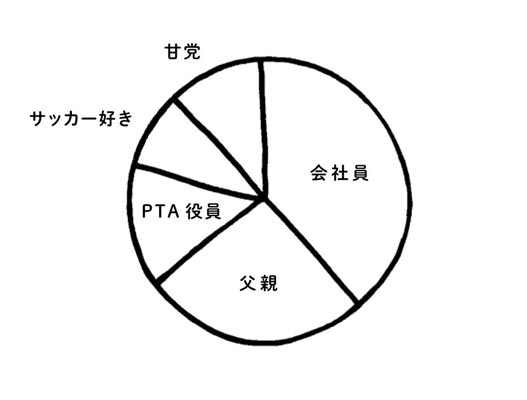
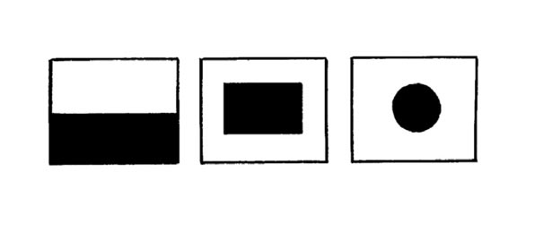

| 忙しさを上手に手放す思考術 | |
| 本間正人 | |
| (2014) | |
忙しさを上手に手放す思考術
本間正人
本作品の全部または一部を無断で複製、転載、配信、送信したり、ホームページ上に転載することを禁止します。また、本作品の内容を無断で改変、改ざん等を行うことも禁止します。
本作品購入時にご承諾いただいた規約により、有償・無償にかかわらず本作品を第三者に譲渡することはできません。
本作品を示すサムネイルなどのイメージ画像は、再ダウンロード時に予告なく変更される場合があります。
本作品は縦書きでレイアウトされています。
また、ご覧になるリーディングシステムにより、表示の差が認められることがあります。
はじめに
現代人が最もよく口にする「口ぐせ」の代表が「忙しい」ではないでしょうか？
「忙」という漢字は「心をなくす」と書きます。
毎日、慌ただしく過ごしていると心の余裕もなくなり、仕事に追われるような気持ちになってしまいます。
しかし、心の持ちよう一つで、「忙しさを手放す」ことが可能なのです。
多くの現代人が、時間を敵に回し、時間に追いまくられています。
つまり、日々、忙しさにとらわれ、他人の時間と戦っているのです。
たしかに、両立したいこと、やらなければならないことはいっぱいあります。
しかし、「時間と戦う」という意識を持ってしまうと、心の余裕がなくなり、辛く苦しい思いばかりがたまっていきます。
では、どうしたら、時間を味方につけることができるでしょうか？
それには、まず、時間がないという「思い込み」を捨てること、そして忙しいという思いを手放すことです。
こう言うと、「それができないから、苦しんでいるんだ」という言葉が返ってきそうですね。
しかし、私たちの現実世界は、私たちの意識が作っているのです。自分の「今」を振り返り、見方・考え方をちょっと変えるだけで、そうした思い込みから解放されます。
かつて、拙著『できる人は１週間を「１６８時間」で考えている』の中で、私は、「１週間は７日」という思い込みを捨てて、自分らしくタイムデザインするヒントを提案しました。
７日も１６８時間も物理的には同じ長さなのですが、気持ちの上では大きな違いが生まれます。出版後、多くの方から「目から鱗が落ちた」という声をいただきました。ほんの少しの発想の転換をはかることで、忙しさを手放し、自分のために時間を使い、さまざまなことを両立することが可能なのです。
本書は、多くのタイムマネジメント本にあるような「時間を効率的に使う」という視点では書かれていません。「効率」という言葉自体が、心を窮屈にするエネルギーを持っているからです。
どれだけの時間を自分のために生きるか？
時間の中に「心」を取り戻すか？
その答えをあなた自身が見つけ出すために、本書がその一助になれば、著者として幸甚の至りです。
なお、本書の上梓にあたっては、クロスメディア・パブリッシングの小早川幸一郎社長、山下絢子さん、また、髙木繁伸さん、角田由紀子さんにご尽力いただきました。深く感謝したいと思います。
本間 正人
プロローグ
両立しなければならない
という思い込みで
自分を忙しくしていませんか？
「忙しすぎる」「両立できない！」と
悩んでしまうあなたへ
→がんばればがんばるほど、苦しくなる理由
時間をうまく使いたい。
日常の中のさまざまなことを、上手に両立できるようになりたい。
これらは多くの人にとって、永遠のテーマでしょう。
時間を上手に使えて、物事をスムーズに両立できるようになれば、やるべき仕事や家事が早く片付き、好きなことに時間が使えて、ストレスも減るはず......。
そう考えて、これまでに「効率的に時間を使う」「短時間で能率を上げる」などと謳った本を、手に取ってきた人もいるかもしれません。
でも、こうしたタイムマネジメントの本をしゃかりきになって読み、実行しようとがんばればがんばるほど、息苦しくなったり、「こんなことができない自分はダメかもしれない」と落ち込んだりした経験はありませんか？
それも無理はありません。
「短時間で自分の能力をフル稼働し、やるべきことを効率的にこなしていく」というタイムマネジメント本の考え方は、「もっとやりたい」「やれるはず」という〝頭の欲求〟を満たそうとするものです。
でも、頭で考える欲求と、心や身体の欲求とは違うのです。
→頭・心・身体のバランスを取ることが大事
たとえば、ビュッフェ形式のレストランで、眼の前に美味しそうな料理がたくさん並んでいると、お腹いっぱいなのについ食べ過ぎてしまいますよね。これは頭の中に「これは美味しいぞ」「もっと食べたい」という欲求があるからです。
その欲求のままに食べ続けていたら、お腹を壊したり、メタボになったりしてしまうでしょう。
頭で考えることは際限なく広がっていくものですが、身体は自然の一部なので、適性をちゃんと把握しています。
だから、頭でやりたいことをやり続けると、身体のほうが悲鳴を上げてしまうのです。仕事中毒（Workaholic）などは、その典型でしょう。
では、心はどうでしょうか。
心は、非常にデリケートで傷つきやすいものなので、頭で考えて「できるはず」と暴走してしまうと、心が疲れたり、プレッシャーに負けたり、落ち込んだりしてしまいます。
「時間を効率的に使わなければ」とプレッシャーをかけ続けると、頭の暴走を助けるばかりで、心と身体が置き去りになってしまう恐れがあります。心や体がついていけないと、疲労感や無力感がつのります。それでは、あまりに不幸というものでしょう。
大切なのは、頭・心・身体の３つのバランスが取れていること。
どれかひとつが暴走するのではなく、３つがバランスよく調和してこそ、本当に充実した、幸せな時間を送ることができるのです。
「両立しなければならない」という
思い込みが生む忙しさ
→実は誰でもいろいろなことを両立させている
今の「忙しさ」から逃れたいと思っている人の多くは、日々さまざまなことが「両立」できないと思い込んでいます。
「自分は、時間をうまく使えていない」「毎日いっぱいいっぱいで、上手に両立するのは難しい」と思っている人は、あらためて自分の毎日を振り返ってみてください。
日常生活の中では、誰でも、やるべきこと・やりたいことがあり、それらを両立させながら生きています。本書では、３つ以上のバランスをとることも、便宜上「両立」と呼ぶことにします。
典型的なものが、仕事と家事です。
とくに働いている女性は、家事をこなしながら仕事をこなしていくことに苦労している人も少なくないでしょう。
仕事と趣味、という両立もあります。
趣味と実益を兼ねて仕事にしている人もいるかもしれませんが、仕事はお金を得るためだけに必要最小限のことをやり、自分のやりたいことや趣味が生きがいになっている人もいます。
仕事は好きなことを支えるための財政──これを「ライスワーク」というそうですが──であって、趣味のゴルフや釣り、農作業、埋蔵文化財の研究等々、やりたいことは別にある。これもまた「両立」です。
あるいは、仕事と家庭（パブリックとプライベート）という両立もあるでしょう。
「イクメン」と呼ばれる男性たちは、この２つのバランスをうまくとっている典型例といえるかもしれません。
仕事と学習を両立させている人も増えています。
私の周りには、大学や大学院にあらためて通う人が多く、常に最新学習歴を更新し続けている人が目立ちます。私が講師を務める研修講師塾にも、キャリアカウンセラーをやりつつ、コーチングの勉強をし、交流分析やソリューションフォーカスの勉強もし、さらにポジティブ組織開発もやって......と、一体いつ眠っているのかしら、 と思うほど勉強大好きな人がいます。
そこで学んだことが仕事に役立つこともありますし、逆に仕事に疲れた人が学習することで潤うというケースもあります。フラダンスや語学、着付け、茶道に華道、民謡、絵手紙に、アクセサリーやドライフラワー作り等々、習いごとをしている人もたくさんいます。
今は、カルチャーセンターだけでなく、家庭でサロンを開く人も増えてきているので、学ぶメニューが多様にあります。学びと仕事や家事を両立したい人もたくさんいるでしょう。
視点を変えてみると、「一人の時間と、誰かといる時間」のバランスを取ることも、両立です。一人で何かに没頭する仕事をしている人は、アフター５に誰かと飲みに行ったりしたいでしょうし、専業主婦で一日中家にいる人は、お友達とランチに行ったりすることで、バランスをとっています。
営業職の人は、たくさんの人に会っているため、一人でいる時間や空間がほしいという人が少なくありません。
このほか、国内と海外にいる時間、東京にいる時間と地方にいる時間......、考えてみれば両立の要素はたくさんあります。
あなたは、どんなことを両立させているでしょうか。
→がんばっている自分を発見してほめてあげよう
自分が何を両立させているのかを自覚してもらうために、私はよく、「アイデンティティ・ポートフォリオ」というものを書いてもらっています。
やり方は簡単。まず、自分がどういう人なのかを表現して「私は○○」というフレーズを20個くらい作ってみてください。
「私は会社員」「私は父親」など、職業や役割をあてはめてもいいし、「私は日本人」「私は甘党」などでもＯＫ。その中から５つほど、大事なものを選び、大事だと思う割合で円グラフを書きます。
すると、「ああ、自分はこういうことを大切にしている人なんだ」ということが分かると同時に、「意外といろいろなことを両立して生きているんだな」ということにも気づくのではないでしょうか。
あなたは、「もっと物事をうまく両立させたい」と思っていたり、自分の時間の使い方に不満があるかもしれませんが、今のあなたでも十分、いろいろなことを両立させているのです。
頭では「もっとできるはず」と思っているかもしれませんが、心と身体の要素をその中に組み込んでみたら、案外、うまいところでバランスをとって生きてきているのではないでしょうか？
少なくとも、今の生活が著しく破たんしているのでなければ、「私も、けっこうがんばってるのね」と、まずは自分を認め、ほめてあげてほしいと思います。

→複数の要素があると人生が豊かになる
アイデンティティ・ポートフォリオを書くと、自分がいろいろな要素を抱えて生きている、ということが、目に見えてよく分かります。
もしも、この円グラフが「会社員１００％」のように、一色で塗りつぶされているとしたら、どうでしょうか。
会社をリストラされた途端、「私っていったいなんだったの？」ということになり、心が壊れてしまいます。
１００％までいかなくても、70％、80％と大きな割合を占めている場合には、定年後に自分の活躍の場が失われると、所在ないような、いたたまれないような気持ちに襲われてしまう可能性もあります。
「仕事ひとすじ！」というのは、美学としては美しいのかもしれません。「退職してから悠々自適」と趣味だけに生きる人生を、否定するわけでもありません。
でも、長い人生を考えたときに、「○○ひとすじ」というのは、意外ともろいものではないでしょうか。
たとえば、奥さんに先立たれた男性と、夫に先立たれた女性を比べたときに、奥さんに先立たれた男性のほうが生存率が低くなり、夫に先立たれた女性のほうが、元気で長生きしていることからもわかります。
多くの場合、女性のほうが、アイデンティティ・ポートフォリオが多彩です。つまり、自分を作っている要素が多いから、バランスが取りやすいのです。
たとえ仕事がなくなっても、「自分には趣味があるし、家族がいるし、地域社会とのつながりもある。大好きなチョコパフェだってあるじゃない！」と思えば、力強く生きていける気がしませんか？
一色に染めるよりも、複数の要素をバランスよく「両立」させたほうが、豊かな生き方ができるのです。
両立したいという思いはピンチでなく、チャンス
→両立するのは「大変」で「難しい」!?
ところが、「両立」という言葉を聞くと、「大変なこと」というイメージを抱く人が少なくないようです。
「仕事と子育てを両立しなければならない」
「趣味は、仕事と両立できるものでなければいけない」
というように、両立は「義務」であったり、「つらいこと」だと感じるのです。
「あちら立てればこちらが立たず」とか「両雄並び立たず」という言葉があるように、「両方」を「立たせる」ことは難しいという先入観があるのでしょう。
たしかに、１つでは簡単にできる皿回しも、２つになった瞬間に難しくなります。
両立しなければならない状況は「ピンチに陥っている」ととらえられがちなのも仕方がないのかもしれません。
でも、両立はピンチではなく、チャンスです。
たとえば、仕事で忙しい女性が、専業主婦に対して「いいわねぇ、専業主婦はのんびりできて」とうらやむことがあります。
でも、専業主婦からすれば、「とんでもない、狭い部屋に子どもとずっと一緒にいると、牢獄に閉じ込められているような気分よ。公園には行くけど、他のママたちに気を遣うし......」と猛反発したいところでしょう。
「牢獄に閉じ込められる気分」とは、自由を奪われる、拘束されるということ。そこにいるしかない、つまり選択の余地がないということです。
仕事と家庭がある人は、たしかに大変なことも多いでしょう。でも、考えようによっては、複数の要素を持っているわけで、それは大きな強みです。
複数の要素があれば、その比率を自分で加減することができます。
つまり、自分の幸福感や充実感を、調整しうるチャンスを手に入れている、ということなのです。
→「この幅に入ればＯＫ」と考えればラクになる
持っている要素の数は、人によっていろいろです。
１００個もあったら、意識がバラバラになり、散漫になり過ぎるので問題かもしれませんが、３つでも５つでも、その人によって適正な数があるはずです。なかには数えるのが難しいものもあるでしょう。
どんなものであっても、「ひとつではなく、２つ以上ある」ということが大事。
複数の要素を持つことで、人生に対するコントロールを手に入れることができ、バランスが取りやすくなるのです。
もう少し、別の例で説明しましょう。
サーカスで綱渡りする人は、長い棒を持っています。
自分の身体だけでバランスを取ろうとすると、ピンポイントで重心をかけなくてはならないため、難易度が高くなります。でも、長い棒を持つと、てこの原理で、重心をかけられる幅が広がり、やりやすくなります。
ピンポイントで「ここでなければならない」となると、窮屈ですし、ちょっとでもずれると自己肯定感が下がったり、メンタルヘルスが保ちにくくなりがちです。
でも、「この幅に入っていればＯＫ」と考えれば、はるかにラクになります。
「～ねばならない」から「～できる」へ
→自分の時間は、自分でデザインできる
「これしかない」というのは、人生をきゅうくつにする思い込みです。
「私には仕事しかない」「子育てしかない」とピンポイントでとらえるのではなく、「自分には２つ以上の要素がある。複数の軸足を持っているんだ」と考えてみてはいかがでしょうか。
そのほうが、気持ちが軽くなり、はるかに生きやすいはずです。
自分が持っている要素を、日々の生活の中でどう配分するかは、その人の自由。
その比率を、自分自身で調整できるということは、「自分の時間を、自分の裁量でデザインする」ということなのです。
時間をデザインする。
これは、充実した毎日を過ごすために、とても大切な発想です。

デザインというのは、ひとつの要素では成り立ちません。
日本の国旗を思い浮かべてみてください。白地に赤い日の丸ですね。もし、白一色だったら、デザインもへったくれもありません。
でも、そこに赤という色を入れた瞬間に、デザインというものが発生します。
白地に赤くといっても、形は長方形なのか丸なのか、大きさはどうか、入れる位置は......？ と考えていくと、デザインの可能性は無限にあります。
場合によっては、ポーランドの国旗になる可能性もありますね。
条件によって、デザインは自在に変化します。
自分の持つ複数の要素を、１日24時間の中に、１週間の中に、ひいては人生の中に、どのようにデザインしていくか。
あなたには、その設計の自由が与えられています。
物事を両立させるということは、一色しかなければコントロールできなかったことを、複数持つことによってより調整しやすく、コントロールしやすくする方法だといえます。
要素は増やすこともできるし、減らすこともできます。ＡとＢ（家事と育児、仕事と趣味......）という要素を、３：７にするのも、２：８にするのも自由です。
複数の要素を、自分でデザインし、眺めてみて、
「ちょうどいいくらい納まっているな」
「美しいな」
「快適だな」
と感じること。これが、毎日を幸せに生きる、ということではないでしょうか。
→時間を〝管理する〟発想から抜け出そう
「時間を効率的に使うにはどうしたらいいか」という、タイムマネジメントの発想では、頭のみが暴走して、「そのためには、こうしなければ」という思い込みに縛られてしまいます。
でも「自分のキャンバスに、今日１日を自由にデザインできる」と思うと、自分を縛る思い込みから解放され、楽しみとゆとりが生まれます。
頭、心、身体のバランスをとりながら、心地よく生きるヒントは、この「タイムデザイン」の発想にあると、私は思っています。自分で自分を縛るのではなく、解放して生きるヒントを、一緒に考えていきましょう。
みんなが考えているより、
ずっとたくさんの幸福が
世の中にはあるのに、
たいていの人は
それを見つけられない。
メーテルリンク
今のあなたは既に、十分にいろいろなことを両立させているはず。できていることに目を向けて、一つひとつ、認めてあげましょう。さらにタイムデザインによって、複数の要素を自分で調整することで、幸せを感じられる瞬間を増やすことができるようになるでしょう。
第１章
忙しさを手放すために
〝今〟という時間を
考えてみませんか？
「現在」と「未来」を見つめ直してみよう
→「先憂後楽」の価値観の功罪
人にはそれぞれ、両立させたいことがあります。
仕事と趣味かもしれないし、家事と育児かもしれない。それは、人によっていろいろです。
でも、すべての人に共通するテーマは「現在と未来をどう両立させるか」ということです。
「先憂後楽」という言葉をご存じしょうか。
岡山には後楽園という日本三大名園のひとつがありますし、東京にも東京ドームのそばに小石川後楽園がありますが、その語源は、先憂後楽からきています。
先に憂いを、後に楽しみを──今はつらいことがあるかもしれないが、先につらいことをしておくと、後が楽しくなりますよ、という意味です。
農業を考えると、この言葉はストンと腑に落ちます。
農地を開墾し、畝を作り、水を引き、種をまき、草取りをして、カラスや害獣を追っ払い......と農作業はしんどいことの連続です。それが、収穫のときを迎えてはじめて、ご馳走にありつける。
農業というのは、先憂後楽型の生産様式を持っているわけです。
かつて日本人の90％は農民だったので、この先憂後楽という言葉が、とてもフィットしていました。
→「我慢が大切」ってほんと？
このような伝統的価値観があるためか、日本ではとかく「我慢が大切」と考えられています。
とくに、学校教育では、そうした指導がなされてきました。
「学校の勉強がどんなにつまらなかったとしても、しっかり勉強していい成績を取れば、いい学校に入れるし、いい企業に行けて、一生安泰に暮らせますよ」という価値観が連綿と踏襲されてきてしまいました。
それが、「勉強は楽しくない」ということを正当化してきたように思うのです。
厳しい見方をすれば、学校の勉強をつまらないものにしてしまった、楽しくするための工夫を怠ってきた、そのための言い訳として、この言葉が使われてきたようにも思えます。
先憂後楽よりもさらに古く、「学習」という言葉があります。
論語の一番はじめには、こうあります。
学んで時にこれを習う。また説ばしからずや。
朋あり遠方より来たる。また楽しからずや。
学ぶことは喜ばしい、人との出会いは楽しい。たしかにその通り、本来、学習は楽しいもののはずです。でも残念ながら、世の中の多くの学校は、楽しくするための工夫にエネルギーを費やすことが、できていないのではないかと思います。
学習は喜ばしく楽しいものではなく、「将来のために、今、つらいことを我慢しろ」というばかり。
これが「今を楽しむ」という発想を奪ってきたのではないでしょうか？
「今」という時間に意識を向けよう
→「アリとキリギリス」の本当の意味
「将来のために、今我慢する」という考えは、『アリとキリギリス』というイソップの寓話でもおなじみです。
働き者のアリは、寒い冬に食べ物がなくなるのに備えて、夏のあいだに一生懸命働き、食べ物をコツコツ蓄えていました。
いっぽう、キリギリスは、アリが働いているのを横目に、のんきにバイオリンを弾き、歌を歌って過ごし、そのせいで冬に食べ物がなくなって死んでしまいます。
この寓話から、私たちは「アリのような生き方が望ましい」と教わってきました。
でも、本当にそうでしょうか？
実際のキリギリスは、卵で冬を越します。そもそも冬は働く必要がないわけで、非常に合理的な生き方をしている、という見方もできるのです。
それに、キリギリスはアリと比較すれば、遊んでいるように見えたかもしれませんが、キリギリス自身は精一杯、キリギリスなりの人生を生きていたのではないでしょうか。
誰かの生き方を、他の人と比較して「こっちが正しい」「こっちは間違っている」と善悪・優劣をつけるというのは、頭の働きのなせるわざ、つまり〝思い込み〟です。
心では「キリギリスみたいな、のんきな生き方がいいなあ」と思っているかもしれないし、身体も「そっちのほうが、ラクでいいなあ」と感じているかもしれません。
アリはアリで、冬は蓄えた食べ物を食べて、ぬくぬくと暮らしながら、「なんだか手持無沙汰だなあ」「夏のほうがやりがいを感じたな」と思っているかもしれません。
比較をして優劣をつける、というのは、あまり意味がないのです。
この寓話を読むとしたら、むしろ、
「そもそもアリは何のために生きているのだろう？ 働かない状態が、本当に幸せなのかな？」
「キリギリスの生き方ってなんだろう？ 本当に働いていなかったのだろうか」
「キリギリスの生き方を自分にあてはめるとしたら、どんな生き方になるのだろう？」
というように考えたほうが、よほど意味があることのように思います。
→「老後は悠々自適」は本当に幸せか？
「現役時代はひたすら働いて、老後は悠々自適」というのも、これと似たようなパターンです。
国の年金だけでは十分ではないから、現役時代に自分で積み立てて資産を形成し、老後は働かないでのんびり暮らそう、というのは、古典的な欧米型の考えです。
でも、引退後、まったく働かなくなって、理想の悠々自適な生活を手に入れたとき、果たして幸せと感じるかどうか。
人にたよっては、やりがいを失った気分になり、一気に老けこんでしまうかもしれません。
→「早くしなさい」が子どもの「今」を奪っている!?
子育て・教育でいえば、母親たちがよく使う「早くしなさい！」という言葉にも、問題がありそうに思えます。
「早くご飯食べなさい」「早く着替えなさい」「早く学校に行きなさい」。
早く、早く......。母親たちは毎日のようにこの言葉を口にしています。
大人の標準的な速度からしたら、着替えも、食べることも、歯を磨くことも、歩くスピードも、子どもはすべて遅いので、早くしてほしいという気持ちはよく分かりますし、言ってはいけないというのでもありません。
でも、「早く○○しなさい」と言われた子どもは、早く終わらせてしまうことに意識が向きます。
すると、「今を味わう」「今を楽しむ」という感覚が薄れてしまうのではないか、と思うのです。
今は、なんでも早くできることがえらい、という風潮があります。
早く終わって点数がいい子が優秀であり、なんでも手早く終わらせることのできる子が望ましいと思われています。
でも、本当にそうでしょうか？
「早く○○しなさい」という大人は、頭の中に「時間はこう使うべきだ」という思い込みがあるのです。
それと現状の子どもの時間の使い方が違っていたり、スピードが遅かったりしたときに、「私の頭で考えた、理想の速度に合わせろ」というわけですが、その思い込みが、子どもの「今」という時間を奪っているのかもしれないのです。
→今を楽しむ工夫をしよう
「でも、早くしなさいと言わなければ、子どもはいつまでもグズグズしている。言わざるを得ない」というお母さんの言い分も、もっともです。
学校は８時10分に始まるのに、いつまでも家でグズグズしている子どもに、「早くしなさい」と言わなければ、遅刻してしまうかもしれません。
しかし、そもそも８時10分始業というのは、誰かが決めた人工的なルールです。
子どもは「テレビが見たい」と思っているかもしれないし、「もっとご飯をゆっくり食べたい」と思っているかもしれず、ルールと欲求とが相反した状態なのでしょう。
でも、心の欲求を満たしてしまうと、遅刻しまくり、学校休みまくりの子になりますし、大人になってそれが許される仕事というのも、極めて限られています。
社会性という観点から言えば、「こういうルールがあるから、８時10分に学校に行くんだよ」ということをきちんと説明してあげることが大切です。
あるいは、「８時10分に始まるなら、家を何分に出れば間に合うかな？ 今日は８時に出てみようか？」と、ちょっとゲーム感覚で登校を促す、という方法もあります。
幼稚園に行かなくてはいけない時間なのに、着替えに手間取ってしまう子どもには、「この着替え、何秒でできるかな？ よーいドン！」とタイムトライアルをするのもいいでしょう。競争の好きな子どもは、喜んでのってくるに違いありません。
こうしたやり方だと、今を犠牲にし、我慢するのではなく、「今を楽しむ」ことができるはず。
工夫次第で「早くしなさい！」を言う回数は減らせるし、今という時間に目を向けさせることができるのです。
→五感の働きの重要性
「今を楽しむ」工夫は、どんな場面でも可能です。
たとえば、家事は多くの主婦にとって「やらねばならないこと」ですが、家事にも楽しみ方はあると思います。
あなたが一番好きな家事を思い浮かべてみてください。
「私は料理が好き」という人もいれば、「洗濯物をパリッと干していると、気持ちいい」という人もいるでしょう。
好きなことをやっているときは、「やらなければならない」という義務感にとらわれてはいないはずです。
気乗りしない家事でも、お気に入りのアロマの柔軟剤を使ったり、「10分でどこまで掃除できるか、試してみよう！」とゲーム感覚でやってみたり、自分なりに工夫することで、楽しむ度合いを高めていくことはできます。
楽しむ、というのは、とても大切な身体の機能、五感の働きです。
「やらなきゃいけない」「早くしなきゃいけない」というのは、「今」から心が離れ、五感があまり発揮されていない状態です。
「３分であわてて、ご飯をかき込んで食べた」などというときは、おそらく味覚も嗅覚もそんなに作動していないのではないでしょうか。
一人でゆっくり味わっているときには「いい香りだ」と感じるコーヒーも、打ち合わせで「早く出てこないかな」と思っているときには、感じる力がダウンします。
このような、身体を置き去りにした状態がずっと続くと、結果的に肩や首が凝ったり、腰痛になったりして、仕事を休んで整体やマッサージに行き、身体のためだけの時間を確保せざるを得なくなります。
ところが、せっかく身体のために時間をとったのに、頭の中では「明日の仕事は......」などと考えている。これはもう、悲喜劇というほかありません。
そもそも、普段から頭と身体と心のバランスがとれていたら、腰痛や肩こりになる確率は格段に下がるのではないでしょうか。
夢中でデスクに向かっていても、ふとした瞬間に「ちょっと姿勢を変えてみよう」「伸びをしてみよう」というふうに、意識が向くはずです。
でも、「あれをやらなければ、これもやらなければ」と思い込み、頭だけが暴走してしまうと、心や身体に意識が向かなくなってしまい、今の自分の気持ちが見えなくなってしまいます。
こうした頭の暴走状態は、自分だけでなく、他人に対しても影響を及ぼします。
部下や子どもに「あれをやれ、これもやらなくちゃ」と頭で考えたことを指示してばかりいる状態では、相手の心や身体に意識がいかなくなり、相手がどんな気持ちでいるのか確認がとれなくなってしまうのです。
→「今ここ」に意識を向け、適正速度で進めばいい
人生はゆく川の流れ。
鴨長明の「方丈記」や、秋元康作詞の「川の流れのように」でもおなじみですが、時間の流れは、よく川の流れにたとえられます。
流れていなければ、川は淀んでしまいます。でも、流れが早すぎたら、それは濁流となり、破壊的な力を持つ危険があります。
水量、勾配、カーブなどの地形的な特徴によって、川の流れにはそれぞれ適正速度があります。
「早く早く」「どんどん次へ」というのは、その適正速度をゆがめることであり、「今」という時間を感じることから、ますます意識を離してしまうのではないでしょうか。
禅の世界では、「前後裁断」という言葉があります。
一瞬前、一瞬後を断ち切って、「今ここ」に意識を向けようという意味です。
でも、私たちの頭は、「今ここ」ではなく、つい先へ先へといってしまいがちです。頭が描くその先に意識が飛んでしまうと、今ここにいるという感覚はどんどん失われます。
何かを味わったり、感動したりするのは心や身体の働きであり、その感覚は「今ここ」にしかありません。
にもかかわらず頭が暴走していくと、今ここにいて感じる、味わうという感覚がどんどんお留守になってしまう。これは非常にもったいないことです。
「将来のために、今は我慢しなくてはならない」というのは、思い込みです。
「今ここ」にいることに意識を向け、今という貴重な一瞬を味わうことを大切にしてほしいと思います。
「今を楽しむ」姿勢を持ってみよう
→社会の変化に対応できる力とは
学習するということも、まさに現在と未来の両面性を持っているので、互いをうまく両立させていくことが必要です。
前にも述べましたが、これまでの学校教育では「つらくて面白くない勉強でも、積み重ねていけば、将来いい学校に入れるし、いい仕事につける」というところに焦点が当たっていました。
社会が高度経済成長のフェーズにあったときは、たしかにその図式が当てはまったでしょう。でも経済が成熟し、社会の経済成長率が鈍化したときに、果たしてその図式が成り立つのでしょうか。
いい学校に入り、いい仕事についても、もはやその延長線上に確実な未来などありません。すると「あのときを犠牲にしてしまった」と、だまし討ちにあったような気持ちに陥るかもしれません。それではあまりにかわいそうです。
高度経済成長時代にはモーレツ社員、その次の時代は、社交性があってＥＱ（心の知能指数）が高くて世渡り上手な人がもてはやされたように、それぞれの時代には「この生き方が合理的だ」というモデルのようなものがあります。
でも、それに過剰適合しすぎると、時代が変わったときに絶滅してしまいます。
ちょうど、草食の恐竜が、肉食の恐竜に襲われないようにするために巨大化していき、気候の変動が起きたときに、バタバタ死んでしまったのと同じようなものです。
ある一時代の生き方に過剰適合しすぎると、社会の変化に対する対応能力が下がるのです。
社会の変化に対応するために大切なのが、「今を楽しむ力」です。
今の中に喜びや意味を見いだせる力、身体や心の声をちゃんと聞き、頭の妄想や思い込みに振り回されない力です。
人間が生命体である限り、それは時代がどう変わっても大事なことではないでしょうか。
勉強にせよ何にせよ、どんな活動の中にも楽しみを見つけられる力をＯＳ（基本ソフト）としてインストールしておけば、社会がどう変化したとしても、対応できる能力が高くなるのです。
→いろいろな体験をすることで、物事を感じ分ける力が付く
では、「今を楽しむ力」は、どうすれば身につけられるのでしょうか。
ひとつは、いろいろな体験をするということです。
食べ物を例に考えてみましょう。
世の中には、激辛などの極端な味や、化学調味料があふれています。
これらを常習的にとっていると、味蕾の発達が鈍くなります。同じ刺激を与えられ続けていると、閾値が上がってしまい、微妙な味わいを感じ分けることができなくなってしまうからです。
いっぽう、自然界に存在する味の種類は、実に多彩です。なんともたとえ難いような、分類不能の味がたくさんあります。
子どもの頃からそうした微妙な味をいっぱい味わっておくと、繊細な味の違いを感じることができるようになります。
いろいろな味わいを知ることで、微妙なものを感じ分ける力がつくのです。
多くの体験をしている人は、微妙な心のひだを感じる力が発達します。
それが、今を敏感に感じ取り、今を楽しむ力となるのです。
→英語を学ぶ意味は、どこにある？
「今を楽しむ」力をつけるためのもうひとつの方法は、今やっていることに意味を見出す工夫をすることです。
私は京都造形芸術大学で「英語力基礎グローバルコミュニケーション」という授業を受け持っているのですが、そのなかで、今を楽しむ力を身につけるためのイメージトレーニングをやっています。
「英語はできたほうがいいよね。でも、英語ができると、どんな〝いいこと〟があるかな？」と、なぜ英語を勉強したほうがいいのか、その意味を考えてもらうのです。
「じゃあ、みんなで話し合ってみよう。一番数多くアイディアを出したチームが優勝です。グループ対抗ブレーンストーミング８分間、用意スタート！」
こんなふうに、チームごとに競争で、アイディアを出し合ってもらいます。
賞品は、チョコレート一箱。それをかけて、みんなで競い合ったところ、40くらいのアイディアが集まりました。
「英語ができると、友達ができる」「海外の情報が得られる」「映画が字幕なしで見られる」「洋楽が歌えるようになる」といったオーソドックスなものから、「恋人ができる」「国際結婚できる」といったことまで。
また、「自分の作品を売り込める」「海外に生地の買い付けに行ける」といった、いかにも芸術大学らしい答えもありました。
「生地の買い付けに行ける」といったのは、ファッション系学科の学生です。
「どこに行きたいの？」と聞くと「タイ。タイのシルクを買いたい」とのこと。
「タイ語ができなくても、英語ができれば話は通じるよ。今度、授業でファッション英語特集をやろう」というと、「えっ、ほんとですか」と目が輝きました。
その学生は、実は英語が苦手です。
でも、英語の勉強の先に、タイのシルクのお店があり、そこに買い付けに行くという楽しみが見えれば、英語に対する学びの姿勢が違ってきます。
さらに、自分のためにファッションをテーマにして、NHKのスキットを作る特集があると思えば、苦手な英語だってがんばれるのです。
このやりとりがあったあと、「映画の特集もやってください」という声も上がり、英語に対する認識が、学生たちの中で変わりつつある手ごたえを感じました。
→今、やっていることに意味を見出す
学校の教室の中だけで、学ぶ目的を探そうとすると、なかなか見つかりません。
せいぜい、「テストでいい点を取って、先生にほめてもらえる」ということくらいでしょう。
でも、いい点をとれなければ先生にほめてもらえないわけですから、楽しみがなくなり、「なんで英語勉強しなくちゃなんないの？」とやる気を失ってしまうのです。
「いい学校やいい会社に入れるから」という理由も同じこと。
多くの子どもたちにとって、いい学校やいい会社というのは、大人の価値観で決めた「人ごと」なので、そこに意味を見つけるのは非常に難しいのです。
自分がなぜ英語を学ぶのかが明確になり、そのためにこの授業を受けているんだ、と思えると、英語の授業は「人ごと」ではなく、「我がこと」になります。
将来、どんなふうに進路が変わるかは誰にもわかりませんが、今のその子にとって、何らかの意味を見つけられるということが、学習意欲を高めます。
日本の学校は、「なんのために学ぶのか」という手続きが、あまりになさすぎるのではないかと思います。
→３人のレンガ職人の話から
「今、やっていることの意味」は、漫然と毎日を送っているだけでは見出せません。
スペイン・サグラダファミリアのレンガ職人の話をご存じでしょうか。いろいろな本に載っていて、知っている方も多いかもしれませんので、かいつまんで説明しましょう。
ある３人のレンガ職人がいて、その一人に「なんでこの仕事をしているんですか？」と聞いたところ、「仕事だからしょうがない。今日はここまでやらなきゃならない」と暗い顔をして言いました。
もう一人に同じ質問をしたところ、「家には愛する妻とかわいい子どもがいます。つらい仕事だけれど、家族のために一生懸命やっているんです」と答えました。
３人目の職人は、「私は神の威光を世の中に広めるために、世界で最高の教会を作り上げるんです。ガウディが残していった作品の一端を私は担っているんです」と答えました。
この中で最も生き生きしていたのは、３人目の職人でした。
この話からは、「今やっていることに意味を見出す」というのは、何に価値を置くかによって変わる、ということが分かると思います。
３人目の職人は、自分の仕事に誇りを持ち、自分の仕事の意味を見つけて輝いています。２人目の職人も、家族のためにという目的があるので、幸せなのかもしれません。
でも一人目の職人は、自分の仕事に意味を見出せず、難行苦行だと思っています。これでは、毎日がつらいでしょうし、身体に故障が出たり、心が病んだりしてしまうかもしれません。
→意味を見出すための努力や工夫をしよう
同じことをやっていても、今やっていることに意味を見いだせる人と見出せない人がいます。
あなたは、今やっていることに、意味を見出していますか？
たとえ、つらい、苦しい、残念だと思っていることにも、意味を見出す「努力」をしているでしょうか？
意味を見出すためには、努力や工夫が欠かせません。
一人で考えてもらちがあかない、というときは、「僕の仕事にどんな意味があるのかな？」と、誰かに話を聞いてみるといいでしょう。
自分の仕事は自分自身と一体化しているので、なかなか客観的に見ることができないものです。他の人の声を聞いて、別の角度から光を当ててもらうことによって、より立体的に今の意味が浮かび上がってきます。
子どもに対しても、勉強の意味を見出す工夫をすることが大事です。
たとえば、「算数は、こういう理由で大事なんだよ」と言うと押しつけがましくなるので、「算数の勉強には、どんな意味があるか、ママと一緒に考えてみようよ」と「レッツ（Let's）」の気持ちで接してみましょう。
一緒に買い物に行って、レジで「１３７円です」と言われたときに「あ、５００円から１３７円引いて、おつりはいくら？」と聞いてみて、「３６３円」「レジより早くできたね！」などというやりとりがあったら、子どもは喜びます。
こういう体験の上に「やっぱり算数は大事だね」というと、子どもの生活の中に、算数が意味を持ってくるのです。
やるときには、やさしい問題からスタートして、徐々にレベルアップしていきましょう。
「美しく」を意識すると、未来が変わる
→あなたの１日24時間はどうなっている？
今を楽しむ力があれば、未来のために現在を犠牲にすることがなくなります。
すると、あなたの未来が変わってきます。
あなたは、今を楽しめているでしょうか？
１日24時間を、自分がどのように使っているか、ためしに円グラフを書いてみてください。
プロローグで、アイデンティティ・ポートフォリオを書いてもらったときと同様、視覚的にデザインしてみると、自分の行動が実感としてよく分かります。
「意外と有意義に使えているな」という人もいるでしょうし、「うわっ、ゲームに３時間も使ってる！」と思わぬ結果に驚く人もいるかもしれません。
１日だけでなく、１週間単位で書いてみるのもおすすめです。
書いたら、「この１日、１週間が、美しい１日、１週間になっているか」をぜひ、チェックしてみてください。
惰性でダラダラとやっているラインやフェイスブックに、時間が浸食されているとしたら、あまり美しいとはいえません。
仕事が大事だとはいうものの、１日のほとんどが仕事で埋め尽くされていたら、それも美しいとはいえないのではないでしょうか。
「あれをやらなきゃ」という義務感でやっていることで埋められた１日や、「なんとなく」過ぎてしまう１日、１週間は、あまり美しいデザインにはならないと思います。
今を楽しみ、自分がいいなと思える使い方をするために、「今日一日を美しくしてみよう」「この１週間を美しく過ごしてみよう」と考えてみませんか？
→「美しさ」を意識すると、行動が変わる
美しい、というのは、どんなことにでも当てはまります。美しい仕事、美しいお昼ごはん、美しい出張......。
美しさの基準は人によっていろいろですし、ちょっと漠然とした概念ではあるのですが、自分にとって美しいってどんなこと？ を考えることに意義があります。
たとえば、「美しい会議」をするとしたら、どんな会議でしょうか。
私の考える美しい会議とは、こんな感じです。
【美しい会議のあり方】
・何をやるかという目的がはっきりしていて、それが参加者に共有されている。
・参加者は必要な人がちゃんと集まり、「誰ひとり欠けても会議じゃない」という 〝つながり感〟がある。
・一方通行で誰かが報告して終わり、ではなく、一人ひとりが自分の言葉で「私は こう思う」「こう考える」という発言がある。
・発言が頭で分かるだけでなく、「そうだよね」という共感の輪が広がり、何か新 しいもの、新しい価値がその場から生まれる。
・このメンバーでやってよかったね、という満足感がある。
・時間通りにピッタリ終わる。
これは会議を開く側に立った美しさですが、自分がもし会議に参加するとしたら、こんな参加の仕方が美しいのではないでしょうか。
【会議への美しい参加の仕方】
・早すぎず、遅すぎず到着する。
・心を整えて臨み、会議中は集中している。
・オーケストラのように、他の人と心を合わせようと努める。
・自分がどんな楽器で、どんなパートを演奏しようとしているのか、全体のスコア （楽譜）の中で意識する。
・スコアを無視して、他の人に割り込まない。
・ジャムセッションのように、即興でみんなに合わせる。
→自分の時間は、自由にデザインできる！
心の中で「美しく」と思いながら、時間を使っていくと、クリエイティビティが発揮できます。
自分は何に美しさを感じるのか、と考えながら１日、１週間の絵を描いてみる。
それは、とても楽しい作業だと思います。
あなたには、１日、１週間をデザインする自由が与えられているのですから。
考えてみれば、今ほど自由が与えられている時代はないでしょう。
身分制社会の時代には、居住地も職業選択の自由もなく、自分のやることは決まっていました。
でも今は、日本国憲法上、職業選択や居住地、配偶者も、すべて自分で決められます。かつては自分のキャンバスに描ける余地などほとんどなかったのに、今ではたっぷりあるのです。
それを考えたら、学校に行かなきゃいけない、仕事をしなきゃいけない、家事をこなさなきゃいけない、子育てもしなきゃ、年老いた両親の面倒もみなきゃ......と義務感にとらわれ、思い込みに縛られるのは、あまりにもったいないことだと思いませんか？
今を楽しみ、自分の時間を自由にデザインするチャンスを活かす。
その気持ちが、あなたの今を充実させ、忙しさを手放すことにつながるのと同時に、未来を明るい方向に導いてくれるはずです。
人生は使い方によっては
充分長いものであり、
充分尊いものであり、
充分美しいものである。
井上靖
自分は何に価値を置いて生きるのか。日々取り組んでいることについて、自分が目指す目標とのつながりや意味を見出すようにすると、充実感がぐっと増します。
将来のために今を犠牲にする、我慢するのではなく、今を味わい、楽しむという生き方にシフトしてみませんか。
第２章
あなたを忙しくさせている
思い込みの罠
重要で緊急なことから効率よくこなさなきゃ、
と思い込んでいないか
→タイムマネジメント本の罠
世界的な大ベストセラーとなった、スティーブン・Ｒ・コヴィーの『７つの習慣』。
ビジネスの世界で成功している人のコツやノウハウを取り扱った本ですが、とくに物事を重要性と緊急性の４つの次元に分け、重要で緊急なことを最優先にやろう、重要だけれど緊急でないことにはしっかり時間を取ろう、という部分は有名です。
おそらく、多くの人が採用していることでしょう。
でも、物事の判断基準というのは、重要性と緊急性以外にもいろいろあります。
重要なことであっても、心が喜んでやりたい、といっているかどうか。必ずしもそうではないでしょう。
それに、重要性とひとことで言いますが、その中にも基準は無数にあります。
お金がいっぱい儲かるか、やりがいがあるか、充実しているか、という基準もあるでしょうし、他の人と違ったことをやってみたいとか、流行っていることが好き、あるいは、損なことでも友人が大事だからこの道を選ぶ、という基準もあるかもしれません。
『７つの習慣』をはじめ、世の中にたくさんあるタイムマネジメント本は、本来たくさんあるはずの重要度の軸を単純化して、「あなたにとって重要なこととは何ですか？」と、ひとつに集約した質問を投げかけます。
でも、「会社の一員としては、この仕事をやり遂げないと帰るべきではないが、息子の誕生日だから、家族の一員としてどうしても早く帰りたい」というように、複数の重要性が持っている価値観が葛藤してしまうことは、ままあること。
そうなると、苦しい思いにさいなまれてしまうのです。
→自分の判断基準はなんだろう？
こうした葛藤の苦しさ、難しさは、単純に解決できる問題ではないでしょう。
ただ、自分の判断基準とは何かを知っておくと、それが助けになってくれることがあります。
自らの判断基準を、自分で自覚しているとは限りません。
それを自覚するために、次の３つの問いを、自分に投げてみましょう。
①あなたの人生の中で、転機になったことを３つ挙げてください。
さて、何が挙がったでしょうか？
進学、就職、結婚でもいいし、クラブ活動や趣味のことでもかまいません。
挙げた項目を見ながら、
②他の選択肢はなかったのだろうか？
と考えてみてください。
「この大学（この会社）以外に、進む道はなかったのか？」「この人以外に結婚する選択肢はなかっただろうか？」と考えていくと、自分では「この道しかない」と突き進んできたつもりが、実はそれ以外の選択肢だってあったんだ、ということに気づくはずです。
③そのほかの選択肢ではなく、あえてこの道を選んだのはなぜでしょう？
３つ目の質問の答えに、自分の暗黙の基準となるべきもの、自分がこれまで自覚していなかった価値観が浮かび上がってくるはずです。
これがあなたの判断基準となる「キーワード」です。
たとえば、Ａさんは、会社を辞めて独立したのが一つの転機になりました。
あえてその道を選んだ理由については、「父親の病気で、家業を手伝う必要に迫られた」「今の会社で上の役職に就くことになったが、自分はもっと現場を見たかった」という答えでした。
ここからは「親孝行である」「同じことの繰り返しより、刺激がほしい」というキーワードが浮かび上がります。
Ａさんは、決してこのことを自覚していたわけではありませんが、質問を向けられたことにより、Ａさんの大切にする価値観、Ａさんらしさ、といったものが浮かび上がってきたのです。
自分の判断基準が分からなかったら、そこに意識の光を当ててみましょう。
すると、何かが浮かび上がってくるはずです。
→暗黙の基準もある
自分の判断基準を考えてみたときに、「もしかしたら、自分の重要性って、親が決めていたのかもしれない」とか「親に対する反発だったのかもしれない」などと、気づくこともあります。
芸術大学で教えるアーティストの先生には、「親が学校の先生で、勉強しろと言われたことに反発し、一番勉強から遠いところを選んでアーティストになった」などという人もいます。
親だけではありません。社会やマスメディアから、私たちはたくさんの影響を受けています。
普段はなかなか自覚することのない「暗黙の基準」は、誰の中にもたくさんあります。
「自分は、こういう世代だから、この時代の影響を受けて、こういう考え方を持ったのかもしれない」というように、いろいろなものを相対的なバランスの中でとらえることができれば、「これしかない」というガチガチの思い込みから解放されるのではないでしょうか。
人生というのは、一瞬一瞬が選択の連続です。
それぞれの選択は、その人のこれまでの人生から生み出されてきた価値観に裏打ちされています。
今の意味を見つけよう、と思ったら、今だけを見るのではなく、過去を見ることがとても大事なことなのです。
「もっとやらなければ」「もっとがんばらなければ」
と思い込んでいないか
→今やっていることを続けてしまう「慣性」
かつての貧しい時代には、人が自由に過ごせる時間などほとんどありませんでした。起きている時間の大部分を、食べ物を見つけるために必死に長時間働いていた時代が、人類史のうちほとんどを占めていたわけです。
それに比べると、今の私たちの世代は、膨大な自由を手に入れているといえます。
ところが、そんな自由が手に入っているにもかかわらず、私たちの生活は日々、忙殺されています。
ちょっとでも時間があると、「もっと、これもできる」「あれもやらなくちゃ」というように、いろいろなことを詰め込んでしまい、自ら苦境に陥っているのです。
いったいなぜなのでしょうか？
おそらく、私たちの中には「生きていくのは大変なこと」というご先祖様からの記憶が残っていて、そこから解き放たれていないためかもしれません。
「もっと働かないと食べ物が得られない」「もっと何かをしなければ、幸せになれない」というように、欠乏していた時代のメンタリティが残っているのでしょう。
人類史上、長くそういう時代が続いたのは確かですが、今の時代は違います。
私たちが幸せになれるとしたら、それは、「もっと」という思いをどれだけ手放すかに、かかっているように思うのです。
→「やめる」ことは罪悪!?
「やめられない、とまらない♪」というのは、かっぱえびせんに限った話ではなく、私たちは、今やっていることをなかなかやめることができません。
今やっていることをやめたら、どうなるんだろう？という恐怖があるのです。
ましてや、今の時代はネットやスマホ、ゲーム、ＳＮＳなど、意識を巧みに引きこむような仕掛けが満載なので、余計、やめることが難しくなっているのでしょう。
それに、「やめる」ということには、なにか罪悪感のようなニュアンスが伴います。
「やめる」は「病む」に通じる言葉であり、「全うしない」「中途」など、いい響きがありません。
英語でも、継続する＝succeedであり、継承するという意味を持つ王位はsuccessionで、成功はsuccessですから、続けることが素晴らしく、やめることは名誉なことではないのです。
でも、「もっともっと」とやり続けていくと、忙しくなり、心が荒れてしまいます。
前にも述べたように、「もっともっと」というのは、頭の働きであり、心と身体が置いてけぼりを食っている状態です。
頭がどんどん進んでいくのに、身体がついていけなくなり、ついに心や身体が壊れるに至って、「やむを得ず」「やめる」ことを余儀なくされる。
でも、意識的に始めたことであれば、そうなるまえに、意識的にやめることだってできるはずです。
→「止観」してみよう
仏教では「止観」という言葉があります。
その字の示す通り、いったん止めて観察してみましょう、という意味であり、止観は悟りに至るためのチャンスともとらえられています。
同じことをやり続けていると、それを客観的に認識することはできません。
いったん今やっていることを「止め」、冷静に「観る」ことが大事ではないでしょうか。
音楽のレトリックでいえば、いったん止めて観る、というのは、「休符」に例えられるかもしれません。
のべつまくなしに音が続いている音楽は、疲れるだけで、聞くに堪えません。
休符があることで、音楽は美しくなります。
さらにいえば、クレッシェンド、デクレッシェンド、フォルテ、ピアノ、ピアニシモ......というように、強弱をつけることも大事です。
集中的にガーッとやる部分と、少しのんびり進む部分と、休む部分。
美しい音楽とは、メロディラインがきれいであることに加えて、メリハリや濃淡があり、一本調子でない変化があるものです。
「やめる」というと、ちょっと恐怖感があるかもしれませんが、「休符を入れよう」と思えば、少し気が楽になりませんか？
休符の長さは、時と場合によって八分休符かもしれないし、四分休符くらいかもしれないし、ちょっと長めの全休符を取ることが必要かもしれません。
同じリズムがずっと続くと、身体も心も痛みます。実際、「ピー」という単調な音は、人が死を迎えたときの音です。
適度な休符を入れ、強弱をつけた美しいリズムを刻みたいものです。
「アイディアが出ない」と悩んでいないか
→短期集中ブレストやミニコーチングを活用
「仕事で、新しいアイディアを出せと言われたが、２週間考えても、らちがあかない」
こんなふうに、自分にはアイディアが乏しいのではないか、とへこんだ経験のある人も多いのではないかと思います。
でも、そう思うのは早計で、ちょっとしたきっかけ次第でいくらでも変わるものです。
そもそも、「何週間も考えて......」などといいますが、実は考えていないのであって、仕事に手をつけるまでに時間がかかる、というモードに入っているだけの話です。
そういうときは、誰かに５分間程度のミニコーチングをしてもらうのがおすすめです。
営業マンで、なかなか成果が出ない、というのであれば、ルートを変える、資料を変える、第一声を変える、などやり方を変えることで、打開策が見つかることがあるものです。
そのきっかけを提示してもらえば、第一歩を踏み出すことができます。
「１時間、会議をしてもアイディアがさっぱり出ない」というときは、「グループ対抗で、１００個くらいアイディアを出しましょう。短期集中５分間ブレーンストーミング、用意スタート！」と、集中してアイディアを出し合うことがおすすめ。
短距離走のように集中して、競争することで、意外にアイディアは出てきます。
→誰かに電話してもかまわない
「アイディアが出ない」と悩んでいる人に限って、一人で思い悩んでいることが多いものです。
一人で抱え込むのは、電気回路がショートサーキットしたような状態、と考えれば分かりやすいでしょう。
同じところをぐるぐる回るだけで、らちが明かず、しまいには熱を持ってくる。頭がカッカするばかりで、生産性は下がります。
そんなときは、誰かに電話して「こういうことで悩んでいるんだけれど、コーチングしてくれない？」とたのんだり、相談を持ちかけてみましょう。
誰かに話を聞いてもらうことで、電気の回路がつながった状態になり、頭はクールダウンし、具体的な第一歩が踏み出せます。
相談された人は、命令するのではなく、「今どういう状態なの？」「今の問題はどういうところ？」「じゃ、変えるとしたら、どういうところを変えたい？」「じゃあ、そこから手をつけてみる？」というように、質問を投げかけて、悩んでいる本人に考えてもらうことが大切。
質問で引き出していくことで、悩んでいる人が自分で答えを見つける可能性が高まります。
→力を借りるのは、恥ずかしいことでも、迷惑でもない
「誰かに電話をかけるなんて、とてもできない」という人もいるかもしれません。
人の力を借りたり、助けを頼むのは、なんだかかっこ悪いというイメージがあるのでしょう。
でも、かっこいい・悪いは自分の殻に閉じこもった発想です。むしろ助け合い、支え合う、コラボレーションと考えたらどうでしょうか？
助け合いは美しいものです。人間は、個体としてはトラやオオカミに立ち向かうことはできなくても、集団でナウマン象を仕留めてきたように、社会的な動物であることに強みがあります。
一人の枠に閉じこもるのは、その強みを放棄すること。もったいないことだと思いませんか？
「こんなことを相談したら、迷惑をかけるんじゃないか」と、遠慮がちな人は思うかもしれません。
でもそこは、「お互いさま」です。
あなたが弱みを見せて、誰かの力を借りたら、その人に対して、「今度あなたが困ったときには、私の力を借りられますよ」というチケットをプレゼントできるのです。そう思ったら、気が楽になりませんか？
あなたが悩んでいることは、他の人も同じように悩んでいる可能性が高いのです。お互いに知恵を出し合うことで、相手の直面している悩み、あるいは、まだ顕在化していない未来の悩みを解決する手助けにつながることもあるでしょう。
むしろ、先に弱みを見せたほうが大人、といえるかもしれません。
一人で思い悩んでるな、と気づいたら、誰かの力を借りてもいい。
それは決して迷惑でも恥ずかしいことでもないのです。
やる気が出ないのに、
無理やりがんばろうとしていないか
→ネーミングで自然とやる気を引き出す
ここのところ、私は知人が経営する会社の名前を、３つもつける機会に恵まれました。
ひとつは「キャストシップ」。
代表の船引衣里さんは、スーパーマーケットの接遇や、サービスに関する研修講師をしています。中小のスーパーでも愛想がよく、サービスのいいお店は生き残っていけるという趣旨で研修をしており、気の合う講師と会社を作ろうと思うが社名が決まらない、というので、一緒に考えてみました。
テーマパークのお客様はゲスト、スタッフは夢のステージに乗っている、という意味でキャストといいます。
「ショッピングという体験をしていただく店員はキャストだ、と中小スーパーの店員が思えたらいいよね」という意味で、キャストという言葉を入れ、リーダーシップ、フレンドシップのシップ（シェイプ＝形）をくっつけて、幸せな体験をしていただくキャストのあり方を提供するという意味の「キャストシップ」に決めました。
もうひとつは、「プロスイッチ」。
代表の高橋武子さんは研修コーチで、素晴らしい実績を上げていました。でも、あまり表に出たがらない人で、屋号も「黒子屋」。
もっとステージの真ん中に立って、次のステージに進もうよ、と屋号を変えることにしたのです。
「今まではアマチュア感覚だったが、それは甘かったと思う」というご本人の言を参考に、「プロフェッショナルに前向きに一歩を踏み出すスイッチを入れる」という意味で「プロスイッチ」はどうか、ということになりました。
高橋さんだけでなく、彼女のところに研修に来る人のプロスイッチを押す、という意味も含まれています。
この名前が功を奏したのか、高橋さんは今やどんどん前に出て、活躍されています。
３つ目は「サンワード・ラボ」。
宮崎県でコーチとして、また、地元FM局のパーソナリティとして活躍している長友まさ美さんは、とても明るい人です。太陽が好き、というので、太陽に向かってという意味の「サンワード」を社名に使うことにしました。
ちなみに、宮崎県は「日向の国」ですから、太陽に向かう、というのは土地柄にもぴったりの名前だと自負しています。
会社名をつけるときは、会社のイメージ、代表者のイメージ、仕事のイメージを思い浮かべて、それを言葉にしたらどうなるだろう？ と考えます。
それは、とても楽しく、うれしい作業です。
→今日１日に名前をつけてみよう
このネーミングの楽しさは、普段の生活にも活かすことができます。
仕事をしていると、つい「これとこれをやらなくちゃ」とＴＯ ＤＯリストを作り、それをこなしていくことが多いと思いますが、それを毎日、繰り返していると、閉塞感を感じ、モチベーションが上がらないこともあるでしょう。
そんなときは、今日１日のイメージを持ち、「今日１日を○○の日にしよう」とネーミングしてみるのです。
ネーミングすると、自分が今日一日の主人公なんだ、ということが自覚できると同時に、自分が今日１日をデザインできるんだ、と思うことができます。
そう考えたら、ちょっとワクワクしてきませんか？
「今日も会社で気の進まない仕事をしなければならない」と義務感に縛られていたら、きっとそういう１日になってしまうでしょう。
でも、「今日をどんな１日にしようか？」と自分なりにデザインする、つまりは美しく生きようとすることで、その１日は輝いた日になります。
頭だけでなく、心や感性も動員して、素敵なネーミングをする。
それは、あなたに与えられたチャンスなのです。
→メディテーションで、心を澄ませる時間を持つ
やる気が出ないとき、たいていの人は「なんとかがんばらなきゃ」と報酬を準備したり、習慣づけでモチベーションをアップしようとします。
いわば、無理やりモチベーションを「かける」のです。
でも「かける」というのは、「モチベーションをかける」「攻勢をかける」「命をかける」など、多くの場合、しんどいことばかりです。
ときには「引いて」、物事をシンプルにしていくことが重要です。
引いた結果、シンプルになると、心が澄んできます。
ごちゃごちゃ、やるべきことがたくさんある、というときは、頭ばかりが働いている状態で、濁った時間になっているものです。
そういうときには、頭にちょっとお休みしてもらい、落ち着ける時間を取りましょう。すると、心が澄んで安らかになり、感性が研ぎ澄まされてきます。
落ち着く時間は、意識して取ることが大切です。
たとえば、会議をしているとき、途中で休憩を取るだけではなくて、「２分間瞑想してみましょう」とメディテーションの時間を取ってみてはどうでしょうか？
会議中は、ついカッカしたり、イライラしたり、あるいはやる気をなくしてどんよりしたり......と人によって、それぞれ感情の波があります。
いい会議をするためには、マインドフルでいるという状態を作ることが大事です。
マインドフルとは、ひとことで言えば「いま、ここ」にいるということ。
会議しながら、「今日の晩御飯は何を食べようか」「週末のデートはどこに行こうか」などと、あれこれ考えているのは意識が散漫になっている証拠であり、充実した会議にはなりません。
今に対する集中度を上げ、参加者みんなの意識場が斉い、波長がそろってこそ、美しい会議になります。
会議の途中でメディテーションタイムを取るのもいいですが、冒頭で、みんなで深く息を吸って吐いて......というメディテーションをやるのも、息を合わせるための効果的な方法です。
心が澄むと、耳が澄んで、他の人の声がよく聞こえるようになり、他の人の感じていることが感じられるようになります。
そうなったとき、自分で納得感が得られます。
無理やりモチベーションをかける必要がなくなるのです。
あなたは、１日の中に、心を澄ませる時間をどれだけ持っていますか？
この１週間の中に、「心が澄んだな」と思える時間があったでしょうか？
やる気が出ない、擦り切れた感じがある、といったときには、頭の暴走をいったん打ち切って、心を澄ませる時間を取りましょう。
完璧主義で、自分を追い詰めていないか
→とりあえず、手早く８割を目指す
目の前の仕事や、やるべきことを片付けるとき、「きちんとやらなければ」という思いが強い人がいます。
もちろん、それは決して悪いことではないのですが、この思い込みが強いストレスになったり、時間をうまく使えない原因になっているとすれば、なんとか改善したいものです。
ちょっと難しい言葉ですが、「限界効用逓減の法則」というのがあります。
たとえば、完成までに３時間かかる仕事があったとして、80～85％くらいまでは、最初の１時間でいってしまう。でも、次の１時間で進むのはせいぜい10％くらい、次の１時間では５％くらい......というように、１時間あたりの生産性はどんどん低くなっていく、という法則です。
これは、すべての物事に当てはまるわけではなく、工場のラインでは「１時間に１００個」というように、時間と生産物はきちんと比例します。でも、企画書などの知的生産物については、当てはまるケースが多いといえます。
もし、眼の前の仕事に汲々として、「時間が足りない」と焦っている人は、とりあえず、80～85％までを限られた時間の中でやり、あとは、誰かのフィードバックを受けてからあらためて完成を目指すやり方のほうが、時間を効率的に使えます。
クライアントがいたり、会社の中でみんなでやっている仕事などは、９９・９９９までやったと思っても、お客様の一言で70くらいにまで戻ってしまうこともあり得ます。
すると、「今までかかった時間はなんだったの？」ということになりかねません。
とりあえず、８割程度を目指して手早く仕上げる、というのが多くの場合、合理的なやり方です。
→プロトタイプを作ろう
もうひとつの方法として、一発で完成品を出す、というよりは、「プロトタイプ（試作品）を出して、バージョンアップしていこう」という気持ちで臨むことが挙げられます。
完璧主義に陥っている人は、正解がどこかひとつ決まっていて、正解ができたらアウトプットしよう、と考えがちですが、そもそも世の中に正解など存在しません。
だから、許される時間内でのベストな状態のものを出して、あとは周囲の人に揉んでもらいましょう。いろいろな人からフィードバックを受けることで、さらにバージョンアップし続ければいいのですから。
ところが、自分が作った作品が批判されたり、「こうしたらどうか」という改善提案を受けたときに、まるで自分自身が批判されたような気がして、落ち込んだり、腹を立てたりしてしまう人がいます。
自分の作ったものと、自分自身とを同一化してしまうのです。
でも、自分の作品や提案企画書などは、自分と同一のものではないし、自分の人格とは切り離されたもの、いわば、産み落とされた子どものようなものです。
「自分の脳が生み出した子ども＝ブレインチャイルド」という言い方をすれば、分かりやすいでしょうか。
子どもは、親である自分とは別人格であり、周囲の人からフィードバックという栄養や刺激を受けて、勝手に育っていくものです。
その成長を「よかったね」と楽しめるような見方でいると、気持ちがとても楽になります。
「これは私が作った企画」「私の提案」と固執すると、フィードバックを受けるのがつらく感じますが、みんなで作っていこうよ、という気持ちで、視点を変え、距離を置いてつきあっていくと、思わぬ道が開けるものです。
〝やるべきこと〟に振り回されていないか
→あれもこれもと欲張ってしまう理由
「毎日やるべきことがたくさんあり過ぎる」と悩んでいる人も多いのではないでしょうか？
あれもやりたい、これもやりたいというのは、突き詰めれば「有能性の証明欲求」です。「ぼくは、あれもやっているし、これもやっている。どうだ、すごいだろ」という思いが、どこかに潜んでいるのでしょう。
とはいうものの、「二兎を追う者は一兎をも得ず」とはよく言われること。
詰め込み過ぎると、虻蜂取らずになりかねません。
かくいう私も、それで手痛い失敗をしたことがあります。
かつて、私は東大の学際情報学府の修士課程に入学し、仕事の傍ら大学院生をやっていました。企業研修もやっていたし、途中からはＮＰＯ活動なども並行して行っていました。
さらに、「月刊ホンママサト」と銘打って、一ヵ月に一冊の単行本を出そう、という目標も立てていました。
おかげで一年留年することになり、さらに、いよいよ修士論文締め切りというときには、単行本の締切りが３冊も重なる、という大ピンチに陥ったのです。
これはいくらなんでも無謀でした。結果的に、私は修士論文を書くことができず、最終学歴は東大の学際情報学府修士課程中退、ということになったのです。
大学院に行ったことで、勉強になったことは確かですし、いろいろな人と知り合いになれて、プラスになったことはたくさんありましたが、時間の使い方としては、まずかったな、と反省せずにいられません。
→「これは本当にやりたいことなの？」と自問してみる
「あれもやりたい、これもやりたい」と思っている人や、本当はやりたいのだが口では「あれもやらなくちゃ、これもやらなくちゃ」と言っている人は、まず「それって、本当に自分がやりたいことなの？」「やるべきことなの？」と自問してみてほしいと思います。
自問するには、いったん立ち止まる時間が必要です。
動き続けていると、その動きの中に巻き込まれてしまい、冷静に物事を見定めることができなくなってしまうからです。
まるで、雪の上で雪を巻き込んで大きくなっていく雪だるまが、動き続けているうちに、いつのまにか土の上にいることに気づかず、土を巻き込んで泥だるまになってしまうようなものです。
どこかでいったん、立ち止まってみたら、「こっちに行ったら、泥だるまになってしまうな」「あっちにいけば、もっと雪が残っているかもしれない」と考えることができます。
もしかしたら、「もう、この大きさで十分だ」と転がるのをやめる必要があるかもしれないし、「別の雪だるまを作って、今の雪だるまの上に載せてみよう」という選択肢が思い浮かぶかもしれません。
動き続けていると、ついあれもこれも、と巻き込んでいってしまう人は、まず立ち止まってみることです。
ビジネスマンの中には、座禅や釣りなど、普段とは時間の流れ方が違うところに行きたい、という欲求のある人がいますが、それは止まってみる時間を自分にプレゼントしているのかもしれません。
一日の中で30分だけでも、立ち止まる時間を作るだけで、心の持ちようは全然違ってくると思います。
→ときには、仕事の断捨離も必要
止まって考えてみた結果、とても無理だなと思ったら、思い切って「断捨離」することも必要です。
自分の１日24時間は、たとえてみればクローゼットのようなものです。
クローゼットの容量は決まっているので、新しい服を買ったら、なにか対策を考えなければなりません。
昔の服を処分するのか、服のたたみ方を工夫するのか、あるいは通販で売っているような、すき間収納グッズを活用するのか......。さもないと、クローゼットがパンパンになり、服が出し入れできなくなってしまいます。
クローゼットの容積を増やす技術は、今の人類にはありません。
24時間は絶対的なものと決まっているのですから、今までとは違うやり方の工夫をすることが必要なのです。
サービス精神を発揮しすぎていないか
→いい人を演じるのは美徳だけど......
大学の代表教授会などに出席すると、つい、いろいろと提案してたたき台を出す、などということになるため、私のスケジュールはキチキチになりがちです。
これも有能性の証明欲求で、うまくいったら「ほら、うまくいったでしょ？」と言いたいのかもしれませんが、実際に私の提案が役に立ち、人に喜んでもらえるのはうれしいものです。
でも、他の人から頼まれたことでスケジュールが埋まっていたり、「いい人」を演じるのは美徳ではあるのですが、「サービス精神」を発揮してばかりいると、自分が擦り切れてしまいます。
→サービス精神が言い訳になっていないか
「サービス」には、もともと礼拝、奉仕といった意味があります。
自分の持っている可能性を活用して、神様や社会のために命を使うことであり、とても尊いことです。
でも「サービス精神」というと、ちょっとニュアンスが違ってきます。
その場の人間関係を傷つけず、雰囲気をよくしよう、くらいの動機で、本来の役目というよりは、プラスαの〝おまけ〟のほうに力を注いでいる意味合いが強いのではないでしょうか。
英語では「サービス精神」という言葉はなく、あえていえば「to please others（他の人を喜ばせる）」という訳になります。
他者を喜ばせることだけに意識が向いていると、自分がつらくなります。
「サービス精神」を発揮することが、本来向き合うべきことから逃げる言い訳になっているとしたら、なおさら考え直さなくてはなりません。
→自分の魂を喜ばせることをやろう
人を喜ばせるのは大切なことなのですが、まずはあなた自身の魂を喜ばせることを考えましょう。
あなたの魂が喜ぶことは、なんでしょうか？
言い換えれば、「今やっていることは、自分自身の自己実現に、ちゃんとつながっているだろうか？」「自分が本当に実現したいことはなんだろう？」ということです。
忙殺されて擦り切れそう、というときには、ぜひこの問いを自分に投げかけてみてください。
プラトンは「正義とは何か。正義とはその人がひとつのことをすること。たったひとつだけのことをすること」と言っています。
私は、これを若いころに読んだのですが、当時は何を言っているのか全く分かりませんでした。
でも今にして思えば、人が人として生まれ、本当にやらなければいけないことは、たったひとつなのかもしれない。そのひとつのことをやり、それ以外のことをやらない、というのが、生まれてきた意味（プラトンの言う正義）、ということなのでしょう。
「あれもやった、これもやった」というのが人生の意味ではなく、魂レベルで「この人はこれをやるために生まれてきた」というものがあり、それを見つけてやることが、その人の人生を本当に生きたことになる、とプラトンは言いたかったのだろうと思います。
自分の魂が喜ぶこと、魂レベルでやるべきことをやる。
それは、「サービス精神」とは対極にあるものかもしれません。
失敗するのを怖がっていないか
→前向きなチャレンジは「未成功」
「やってみたけれど、うまくいかなかった」ということは、ビジネスにおいても、日常生活においてもよくあることです。
でも、「失敗してしまった」と落ち込んで、新しいことにチャレンジするのが怖い、次の一歩が踏み出せない、となってしまうのは残念なことです。
本当の失敗とは、何にもチャレンジすることなく、時間だけが無為に流れていく状態のことをいいます。
「やってみたけれど、うまくいかなかった」ことは、失敗ではありません。
その時点ではうまくいかなかったかもしれませんが、経験を次へつなげて成功に導くことはいくらでもできるはず。そう考えれば、前向きなチャレンジは失敗ではなく、「未成功」というべきでしょう。
→形にするのを怖がるな
仕事で何かを提案したり、アイディアを形にするときなどは、「もし、これをやって、うまくいかなかったらどうしよう」という思いにとらわれがちです。
何かを形にする、ということは、不完全な物しか生み出せない自分の未熟さと向き合わなければならない怖さがあるからです。
でも、頭の中にある思いを形にしないままでいれば、自分の限界や未熟さと直面しなくても済む一方、いつまでたっても自分の枠から外に出ることができません。
これこそが「失敗」と呼ぶべきことではないでしょうか。
自分を成長させようと思ったら、ときには今までの安全地帯を踏み出して、やってみたことのないことをやり、形にしたことがないものを形にしてみることです。
すると、今まで気づかなかった自分の可能性が開けてきます。
不完全なものが出てきたとしても、それは新しい前向きなチャレンジをしている途中の「未成功」と呼ぼうと提案しているのです。
恐れずに、自分の可能性を引き出す楽しみに、光を当てていってください。
→目標の立て方が未成功、ということもある
前節で、私が大学院生だったころの時間の使い方の失敗談についてお話ししましたが、それも新しいチャレンジととらえれば、「失敗」ではなく「未成功」と呼んでもいいかもしれません。
１ヵ月に１冊本を出す「月刊ホンママサト」という目標は、６冊出したところで断念することになりました。
でも、仮に１年間12冊本を出し、目標を達成できたとしても、果たして成功と呼べたかどうかよく分かりません。そもそも、毎月１冊本を出す、という目標自体が無謀だったからです。
成功と呼べるのは、いい目標を立てて、それがうまくいった場合です。
不適当な目標を立ててしまったときは、目標の立て方が未成功だった、というべきでしょう。
今の私は、「肉体的にもクオリティ的にも、無理のない目標の立て方をしよう」と思えているので、前の自分よりは少し進化していると思っています。
とはいえ、仕事の幅は以前より広がっているので、時間の使い方がどれだけ進化しているかは何ともいえないのですが......。
いずれにせよ、「未成功」だった場合には、一喜一憂して終わらせないことが大切です。
どこがうまくいかなかったか、課題はなにかを振り返って考えてみて、自分の学習の機会とし、次の行動の改善につなげることが、成功への道なのです。
オンとオフの切り替えがヘタだ、と悩んでいないか
→無理に切り替える必要はない
「オンとオフの切り替えをうまくやろう」とは、よく言われることですが、私はこの「オン・オフの切り替え」という言葉に、少し違和感を覚えます。
オンのスイッチをパチンと入れたとたん、１００％になり、スイッチを切ったオフ状態は０（ゼロ）になる。
つまり、オンとオフを切り替えるということは、白か黒かという極端な状態を行き来することになるわけですが、仕事をはじめ人の活動というものは、必ずしもはっきりと白黒つけられるものではないと思うのです。
それに対し、陰陽のマークが巴印になっているのは、実に示唆的なことだと感じます。陰の中にも小さな陽の要素があり、陽の中にも陰の要素があり、陰陽はグラデーションになっています。
こうした中間領域もある、という認識を持つことが大事ではないでしょうか。
たとえば、私は先日、大学生を派遣するためのプログラムのために、フィリピンに下見に行きました。これはもちろん仕事なのですが、行き先がフィリピンだと、非日常性を味わうという点で、ちょっとオフっぽい感じもあります。
ＮＰＯ活動で全国47都道府県に出かけていくのも、活動としてはオンなのですが、普段と全然違う風景を見たり、一人でホテルに泊まって日頃なかなか見られないテレビを見るなど、オフの要素も多くあります。
つまり、人は１００％オン、オフを切り替えているわけではなく、オン：オフ＝７：３とか、５：５といった状態もありうるのです。
どんなに仕事に打ち込んでいる人でも、ひとつのことだけに集中していると、ときには気持ちも緩みますし、飽きることもあれば、つらいと感じることもあるでしょう。
そういうときこそ、ちょっとしたオフの要素を入れることで、気持ちも楽になり、身体もリラックスできるようになります。
「オンとオフはきちんと切り換えなければ」と無理に思う必要は全くないのです。
→オンのためのオフ、という前提を取り払おう
オンのときにも楽しめる仕掛けを用意しておくことで、かえっていい仕事ができることもあります。
大前研一さんは、『遊び心』という著書の中で、知的生産活動は、ガチガチに理詰めで考えるだけでなく、実技能を使ってクリエイティビティを発揮しよう、といった意味のことを書いています。
オンの中であっても遊び心を発揮することは、とても大切なことだといえます。
幕末に尊王攘夷の志士として活躍した高杉晋作は、「おもしろきこともなき世をおもしろく......」という歌を詠みましたが、この姿勢が、仕事をする上でも大事ではないでしょうか。
それができないと、仕事はつらく悲しく苦しいもの、自分をすり減らすものになってしまいます。さらに、仕事をしているオンの状態のときはつらい気持ちなので、オフで充電して気分転換をしよう、となると、オフはあくまでオンのためのオフという位置づけにとどまってしまいます。
それでは、オンもオフも充実しないのではないでしょうか？
オンのためのオフ、という前提を外し、大変な仕事の中にも楽しみを見つけ、義務感をできるだけ減らすことが、オンもオフも楽しむことにつながっていくのではないかと思います。
→オンのなかにも、楽しみは発見できる
オンもオフも楽しむためには、どうすればいいでしょうか？
ひとつは、物事を一色で見ないことです。
たとえば、介護施設で高齢者をケアする仕事をしている、という人がいたとして、「今、私は高齢者のお世話をしている」というひと言で片づけてしまうと、義務感が前面に出たニュアンスになります。
でも、実際には会話を楽しんだり、散歩でいい景色を見たり、お世話をしながら学ぶこともあったりと、いろいろなことをしているはずです。
ひとつの時間の中には、ひとつのことだけでなく、声を聞いたり、人と話したり、風景を見たり、自分の中の新しい動作や心の動きをとらえたりと、さまざまな要素がてんこ盛りになっています。それを感じないのは、あまりにもったいない話です。
その要素に気づき、おもしろいこと、珍しい人、やってみて自分が進化したところなどを発見していくことで、楽しむことはいくらでもできるのです。
もうひとつは、「自分はこれを選んでやっている」という意識を持つことです。
「仕事がイヤだ」「なんでこんなことやらなくちゃいけないの？」と嘆いている人でも、ちょっと遠目で俯瞰してみると、この会社を選んでこの場にいるという選択をしたのは、自分自身だということに気づくはずです。
振り返ってみれば、仕事の選択肢は、それ以外にもいろいろあったはず。
でも、数ある選択肢の中から、「私が今の仕事、今の会社を選び取ったのだ」という立場に気づいたら、義務感から少しは自由になれるのではないでしょうか。
人は心が愉快であれば
終日歩んでも嫌になることはないが、
心に憂いがあれば
わずか一里でも嫌になる。
人生の行路もこれと同様で、
人は常に明るく愉快な心をもって
人生の行路を歩まねばならぬ。
シェイクスピア
世の中にある無数の思い込みや義務感によって、本意ではない忙しさに巻き込まれてしまっている人が少なくありません。「ねばならない」「これしかない」「もっとやらなくては」......それらの一つひとつを手放すことで、今までとは違って軽やかな足どりで、人生を進むことができるはずです。
第３章
忙しい毎日を抜け出し、
上手に時間を使うための
考動トレーニング
記憶するテクニックを身につける
→効率よく、短時間で、長期記憶に定着させる
仕事をするかたわら、自分のために学んだり、能力開発をしたい、という人はたくさんいます。
今はＥラーニングや公的機関の講座などで、それほどお金をかけなくても、いろいろなことが学べる社会的環境が整ってきました。喜ばしいことです。
でも、学びたいという意欲のある社会人が口をそろえて言うのが、「時間がない」ということです。これが制約となって、なかなか思うように学びが進まないというのです。
時間は、万人に共通の希少な財。これを活かすためには、効率よく、短い時間で学ぶことが非常に重要になってきます。
さらに、資格試験を受験したい、などという場合には、暗記しなければならないものもたくさんあるので、長期記憶に定着させることも大事な学びのポイントです。
→記憶のメカニズムを理解すれば、ラクに覚えられる
効率よく、短時間で、長期記憶に定着させるためには、記憶のメカニズムを理解し、それにのっとって覚えるのが早道です。
ある事柄を長期記憶に定着させるためには、
①メモライズ
②リコール
③リメンバー
という３つのステップがあります。
①のメモライズとは、インプットのことです。授業で「ＡはＢである」と習ったり、テキストで出てきたことを覚える作業がそれに当たります。
これは学習するときに、最初にやることなのですが、こればかりやっていると、短期記憶に入るだけで、なかなか長期記憶には入りません。
新しい単語帳を次々に買ってしまう、という人は、このパターンです。
→「リコール」してみよう
長期記憶に入れるためには、②の「リコール」という作業が非常に重要です。
リコールとは、「思い出す」こと。新しいことを入れるのではなく、自分が知っていることを、繰り返し思い出す。つまり復習をすることです。
復習のための最もよい方法は、アウトプットです。
たとえば、子どもたちがよくやる「しりとり」は、この典型例といえます。
誰かが「うめぼし」と言ったら、「あっ、それ知ってる！」と思い出し、別の誰かが「詩集」と続けたら、「ああ、そんな言葉もあったな」と思い出す。
他の人と一緒に、「思い出す」言葉遊びをすることが、言葉を自分のものとして定着させるのに役立っているのです。
言葉だけでなく、知識を定着させるのも同じことで、やはり復習が大事です。
最近は、反転授業といって、授業を受ける前にＥラーニングで知識をインプットしておき、授業中はインプットした知識を前提に、ゲームやディスカッションなどのアウトプットに充てる方法が、新たな学習法として注目されています。
インプットだけでなく、アウトプットの時間をしっかり取ることで、長期記憶に定着させる効果が期待できます。
さらに、ハーバード大学の精神医学者であるスティックゴールド先生の研究によれば、インプットしたあと、６時間以上の睡眠をとってから復習すると、学習したことが効率よく記憶に定着するとのこと。
一晩置いたカレーがじっくりと美味しくなるように、一晩寝たあとの復習は、効果があるというわけです。
こうしたコツを押さえれば、所要時間は短くても効率よく学習することが可能です。
→リメンバーの状態まで持っていくことが重要
メモライズ（インプット）したことを、リコール（復習）したら、最後はリメンバーです。
リメンバーとは、常に覚えている状態、長期記憶に定着して忘れない状態のことです。
自宅の電話番号は、わざわざ思い出す努力をしなくても、自然にパッと出てきますよね？ それがリメンバーということです。
でも、「会社の創立記念日は？」と聞かれて、「えっ、分からない......」となったら、まずはメモライズから入り、また思い出すときに「○月○日だったね」とリコールしして、最後には聞かれたらすぐに答えられるところまでもっていくわけです。
リコールしたら、リメンバーの状態までもっていくことが大切です。
→感情を伴う学習をすれば覚えやすい
長期記憶に定着させるもう一つの方法は、感情を伴う学習をすることです。
記憶のメカニズムを先に解説すると、記憶中枢は「海馬」といい、そこに損傷が発生すると記憶喪失になってしまう部位です。
その海馬の下には扁桃体という感情中枢があります。
人間には喜怒哀楽の感情がありますが、その感情が刺激を受けると、扁桃体から脳内伝達物質の分泌が促進されます。
それが海馬に回ると、学習したことが長期記憶に定着しやすくなります。
つまり、感情が刺激された学習は、記憶に残るのです。
たとえば、学校で先生が淡々行った授業はそれほど印象に残っていなくても、横道にそれて話してくれたエピソードや雑談は、なぜか記憶に残っている、ということがありませんか？
毎日同じ教室で、同じ位置で、同じ先生が同じような声のトーンで話すことは記憶に残りにくいのですが、「へぇー」「面白いな」と感情が刺激された事柄は、覚えているものなのです。
→五感を刺激すると記憶に残る
何かを覚えようと思ったら、感情を刺激することをして、扁桃体を刺激することを工夫するとよいでしょう。
たとえば、どちらが早く覚えられるか、誰かと競争をしてみる。すると、負けず嫌いな人は扁桃体から脳内伝達物質がたくさん出ます。
五感を活用するのも、いい方法です。
五感活用の基本は、ノートを取ること。
講義を聴いたときに、右から左へ抜けていくのはよくあることです。ただ話を聞くという聴覚だけに依存した学習は、あまり効率的ではありません。
ノートを取ると、聴覚だけでなく、触覚、筋肉系統も作動するので、それに連動して脳が作動します。さらに自分の書いた文字を見ることで、視覚も動員されるので、五感のさまざまな部分を活用することができるのです。
音読するのも同じこと。音読すると、声帯を使いますし、自分の声を聞くことで聴覚も刺激されるなど、多くの部分が連動します。
いろいろな部分が作動すると、学習したことが長期記憶に定着しやすくなるのです。
→環境を変えると、五感が働きやすくなる
学習する環境を変える、という方法もあります。
今まで一度も入ったことのないカフェで勉強したり、いつもとは違う椅子に座ってみたり......。
すると「○◯駅前のカフェで、若葉のきれいなときに、『借り方・貸し方』について学んだな」とか「この特約条項については、わざわざ○◯線の各駅停車に乗って、一番右端の席に座って勉強したな」と、そのときの印象とともに、学んだことが思い出されます。
環境を変える工夫をすると、心が動き、五感が働きやすくなります。
もちろん、ゲームセンターでゲームをしながら、というのは、いくらなんでも無理なので、あくまでもほどよい刺激であることが大事です。
直感力を磨く
→本能を押さえ付け過ぎると、直感力は鈍くなる
「物事をなかなか決められないんです」という人がいます。
迷っているうちに、どんどん時間が過ぎていってしまう。なんだか、もったいないことですよね。
こういう人は、直感で決断するという筋肉、回路が発達していないか、あるいは萎えてしまっている可能性があります。
誰でも、眠い→寝よう、食べたい→食べようという具合に、本能的なことに対しては「さあ、自分はここでどうしようか」などと考えたりしません。本能とは、基本的に瞬間的なことだからです。
たいていの動物が本能の赴くままに生きているとするならば、欲求にはきわめて素直です。
でも、人間は社会的な動物なので、周りのことを気にしたり、「これはやっていいことかどうか」と判断して、本能的な衝動を抑えることができます。
それはそれで尊いことなのですが、あまりブレーキをかけ過ぎると、直感力を使うことが、次第にできなくなっていく恐れがあります。
たとえば、軍隊や刑務所などでは、そうした本能自体を矯正するような仕組みになっています。
６時起床、６時半に朝食、そのあとはこれとこれをして、12時に昼食、夕方の６時には夕食、入浴をして10時消灯......といったスケジュールがガッチリ組まれています。一人ひとりの生理はみんな違うはずなのに、本能を全部抑圧して、「このパターンで生きろ」と、考えなくてもその行動が実現するように、無理やり強制するのです。
これは、軍隊や刑務所など、特別な場所に限ったことではありません。
程度の差こそあれ、学校や親も同じようなことを子どもに押し付けている可能性もあるのです。
→メニューを見たら30秒で決めるトレーニング
もし、自分は直感力が低いなと感じたら、それを磨くトレーニングをしていきましょう。
まずは「今、自分は何をやりたいのだろう？」と考えてみます。
直感的にパッと答えが出たら、それをすぐにやってみます。
たとえば、お店に入ってメニューを開いたら、30秒以内で決めてみましょう。
これは直感力を磨く、いいトレーニングになります。
メニューの写真を見て、価格を見て、心動かされたものをパッと選ぶ。このトレーニングを意識してやってみると、直感力が磨かれ、決断力の精度も上がってきます。
とにかくすぐに決める、というのは、ときとして非常に大事です。
孫子の兵法には、「兵は拙速を尊ぶ」とあります。
軍事的な行動はウジウジと迷っていると相手に攻め込まれるので、とにかく不十分でも、すぐにスクランブルをかけて臨戦せよ、というわけです。
もちろん、いつも拙速ばかりでは具合が悪いのですが（孫子の兵法の一番は「戦わずして勝つ」ですから）、ときとしてそういう状況もある、ということです。
失敗を恐れて、いつも「万全の準備をしないと......」と思っていると、チャンスを逃してしまう可能性があります。
→３つリストアップするトレーニング
その昔、陸軍の参謀を務め、戦後は伊藤忠商事の会長を務めた瀬島龍三さんには、面白いエピソードがあります。
なにか意見を求められたら、直感で結論を答えたあとに、「理由は３点あります」「問題点は３つあります」などと、論点を３つに絞って話したというのです。
「Ａです」と答えてから、３つの理由を考える。
これは、直感力や思考力を磨く絶好のトレーニングになります。
たとえば、ファミレスに行って、今日のメニューを選ぶとしましょう。
まずは直感で「カレーライス」とすぐ決めます。そしてその理由を３つ、挙げるのです。
「①メニューを３つの価格帯に分けたら、これは一番リーズナブルなランクにあるから。②午後は眠ってしまいそうな会議があるので、刺激物をとって起きていることが望ましいから。③カレー好きなのに、ここ３週間くらい食べていなかったから」という具合です。
どんなものを挙げても、たいてい３つくらいは理由があるものなので、ほとんどのことは答えられるはずです。
あるいは、「夏休みの旅行先はイタリアに決定しました。その理由を挙げてください」「えーっと、①ゴンドラのある街、ベニスに行ってみたいから。②この前、テルマエロマエというお風呂の映画を見たから。③パスタが好きだから」というように、ペアになったり、グループを組んで、質問を出し合うのもいいでしょう。
たとえ、イタリアのことがあまりよく分からなくても、理由を出さなきゃ、と思えば、一生懸命探します。すると、自分の記憶の中から思い出す（＝リコール）作業をすることになります。
リストアップというのは、直感力を磨くだけでなく、アウトプットのエクササイズにもなります。
→「すぐやる課」を個人レベルで実行してみよう
千葉県の松戸市には「すぐやる課」という部署があります。
「すぐやらなければならないもので、すぐやり得るものは、すぐにやります」という精神に基づいて、市民からの苦情や要望に素早く応じてくれるのです。
実際には、道路の補修や動物の死体処理、スズメバチの巣の駆除などといったことをやるのだそう。もちろん対応できないこともありますが、市役所がまず窓口になってくれることで、住民の満足度を上げる効果があったようです。
この「すぐやる課」を、個人的に実践することが、インプロ（即興）力を磨くトレーニングになります。
たとえば、先日、私のワイシャツのボタンが外れそうだったので、自分ですぐにつけてみました。すると、独特の爽快感があるのです。
いつまでもやらないでいると、ボタンが外れそうなのを目にするたびに、「ああ、やらなくっちゃ」という気分にさいなまれます。
心理学的には、それを「未完了」というのですが、その未完了の感情があると、エネルギーが失われていき、眼の前のことに集中できなくなります。
再び私の例でいうと、締め切りを過ぎている本の企画があり、心のどこかで「やらなきゃいけない」という思いがいつも引っかかっています。すると、どうもすっきりしないというか、眼の前のことになかなか集中できない感があるのです。
未完了のことを完了させることは、心のすっきり度合を高めてくれます。
→「未完了」のことを完了させるトレーニング
現代人はとても忙しく、社会人、企業人、家庭人、所属団体での役目等々、やらなければいけないことが複数存在します。
たとえて言うなら、頭の中に仕事机が３つも４つもあって、それぞれの机の上にはやるべきことが山積みになっている状態なのです。
だから、ひとつの机の前にいるときは、手につくことからどんどん完了させていくことが大切です。
「いつかそのうちにやろう」という「いつか」は、やってきたためしがありません。
だからこそ、今その局面にあるときに、その局面のことをすぐにやるということが、必要になるのです。
これも、インプロ力をつけるのに役立ちます。
では、未完了のことを完了させるにはどうしたらいいのでしょうか？
おすすめなのは、「ゼロの日」を作って、すぐやるトレーニングをすることです。
やり方は次の通り。
①まずは自分のやりたいこと、やらなければいけないと思っていることを１００個、リストアップする。
クローゼットの中の掃除、衣類のクリーニング出し、エアコンの掃除、書類の整理、会議の資料づくり、パソコンのメンテナンス......。内容はなんでもＯＫ。とにかくバーッと一気にリストアップしていきます。
②「すぐやる日」を決めて、リストアップした項目を片っ端から片付けていく。
たとえば、今度の日曜日を「すぐやる日」に決めたとしたら、リストアップしたもののうち、やりやすいものからどんどん片付けていきます。
「どこから手をつけようかな」と迷ったらダメ。直感で、確実にすぐクリアできそうなものをチョイスしていくのがポイントです。
もちろん、その日のうちにすべての項目を片付けるのは不可能なので、やれるところまででＯＫ。「今日は23個できた」のなら、次にまた「すぐやる日」を決めて、続きをやればいいのです。
項目をゼロにしよう、という意味で、10日、20日、30日、など、ゼロのつく日に設定すると、忘れないで着実に実行できると思います。
→環境が整うことによる好循環
このトレーニングをやるときに、「えっ、１００個もリストアップしなきゃいけないの？」と面倒に感じるかもしれません。
なかには、やらなくちゃと分かってはいるけれど、向き合いたくない事柄もあるでしょう。
でも、漠然と「ああ、やらなきゃいけないんだよなあ」と心のどこかで思っているのは、自分の心を重くするもとです。なんだかモヤモヤして実態がよくつかめないものは、自分の心を悩ませるからです。
「幽霊の正体見たり枯れ尾花」といいますが、正体がはっきりと認識できれば、対応の第一歩が踏み出せます。
まずはリストアップすることで、やるべきこと、やりたいこととしっかり向き合いましょう。
リストアップしたひとつひとつの項目と向き合い、片付けていくことで、「１個終わった！」と快感が得られ、さらに数をこなすうちにスピードも上がっていきます。
というのは、書類が山積みになっているところから「返事を出さなきゃいけない手紙」や「作らなきゃいけない資料」を探し出すのは大変ですが、上からどんどん片付けていくと、「次はこれとこれ」というように、やるべきことが手の届く位置にくるようになるからです。
すると、ひとつの項目にかかる所要時間が大幅に短くなります。
環境が整っていくと、スピードが上がり、さらに片付いていくという好循環が生み出されます。
そのサイクルに気づいたら、爽快感におどろくはず。
「あれ？ ３ヵ月も放って置いたけど、２分で片付いちゃった」など、意外にあっさりできてしまうこともあるのではないかと思います。
判断力、決断力、実行力をつける
→決断に時間はかからない
コーチングの研修などで、「判断力、決断力、実行力の三拍子が、マネージャーにとっては大事なことだ」と、よくお話ししています。
そもそも判断力というのはなんでしょうか。
判断とは、目標を達成するための選択肢がＡＢＣの３つあったとき、どれがいいかと「判る」ことです。つまり、コストベネフィットとか、メリット・デメリットを勘案して、どれがベターか分かるということです。
では、決断力とはなんでしょうか。
決断の断の字は「断ち切る」ということ。「決断」は英語でdecision。deは「切る」、cisionは「離す」、つまり切り離すという意味です。
選択肢がＡＢＣの３つあり、Ａで行くと決めたらＢＣをスパッと切り離す。これが決断するということで、時間的には一瞬のことです。
「判断はできても、決断できない」という人がいます。
「Ａがいいと思うんだけれど、Ｂも捨てがたい。Ｃの線も捨てがたい」と未練たらたらな人は、決断力がない、あるいは低い人で、こういう人がマネージャーだと、組織の意思決定がずるずる遅れてしまいます。
でも、さきほども言ったように、決断に時間はかかりません。のこぎりでギコギコ切るのではなく、スパッと切らなければ断面は美しくないのです。
→決められないのではなく、決めないという選択をしているだけ
よく「２週間、考えさせてください」などといいますが、これは２週間考えるというのではなく、２週間後に決める、という意味であることがほとんどです。
判断材料を集めなければならない場合や、情報が届くのに時間がかかることも実際にはあるでしょうし、それを読み解くのに時間が必要なケースもあるでしょうが、決めるのは一瞬です。
判断材料をどれだけ集めたとしても、最後に決めるのは直感でしかないのです。
「迷ってしまって、決められない」というのも同じこと。
必要な判断材料を集めていないから決められない場合もあるかもしれませんが、そもそも、判断材料が１００％完璧にそろうなどということは、まずあり得ないでしょう。あらゆることを想定するのは不可能なので、限られた情報量の中で「まあ、このへんかな」というのを目分量で計るしかありません。
「まだ決めたくない」という人もいます。
でも、決めたくなくても決めなければいけないことはあります。
→最後は直感でエイヤッといくしかない
厳しい言い方をすれば、「もう少し考えさせてください」「決められません」「決めたくありません」というのはすべて、「決めない、という選択をし続けている」ことだといえます。
どんなに迷っていても、決めるときは一瞬で、直感に基づいてエイヤッといくしかないのです。
直感で判断できない理由の多くは、「自分が決めて、失敗したらどうしよう」という思いに駆られるからでしょう。
そんなときは、最悪のシナリオを考えてみてください。どんなに最悪のケースであっても、多くの場合、死ぬことはまずありません。それに、会社をクビになることも、ほとんどないのではないでしょうか？
そう考えれば、前に進む勇気が出せるはずです。
それに、チャレンジして、結果オーライにならなかったとしても、それは失敗ではなく「未成功」です。
将棋棋士の羽生善治さんだって３割は負けますし、イチローでも７割は凡退します。
でも、彼らは失敗を恐れながら将棋盤に向かったり、打席に立ったりはしないでしょう。
野球でいえば、ボールが来たときに打つか打たないかは、一瞬の決断です。
全部見送っていたら、たまにはフォアボールで出塁することはあっても、相手のピッチャーが一流であればあるほど、見逃し三振で終わってしまうことが多いのです。
だから、どこでバットを振るかという決断が大事になります。
→「迷った時には、すぐ決める！」を自分の方針にする
どうも判断力や決断力がない、と思う人は「迷った時にはすぐ決める！」と自分に言い聞かせることが大事です。そういう人生を歩もうという方針にしておくのです。
何回も何回も判断しては決断し、判断しては決断し......を繰り返してはじめて、判断力や決断力の精度は高くなっていきます。なんの判断も決断もしなければ、判断力や決断力はつくはずもありません。
まさにon the job learningです。自分自身の体験を通じて学びとっていくことが大切なのです。
迷っていても、前には進みません。精神的に疲労するだけです。
電気回路で言えば、ショートサーキットしたような状態なので、なんの生産性もないのです。
でも、決めてしまえば、何らかの回路はつながります。
スイッチがオンになり、明かりがつけばよし、つかなければ次のスイッチを押せばいいだけのこと。
爆発することはめったにないのですから、「どれかなあ」と躊躇するのは時間のムダです。とにかく決めて行動することで、気分はぐんと軽くなるはずです。
→過去を振り返らない
決められないで悩む、というのは、未来のことに対してですが、過去のことをクヨクヨと思い悩む人もたくさんいます。
タレントのタモリさんは自分の出演した番組を絶対に見ないらしい、と聞いたことがあります。
なるほどな、と思いました。「あのとき、ああすればよかった、こうすればよかった」と、どんなにあとから思っても、タイムマシンを持っていない我々には、なすすべがありません。
時間は巻き戻せないし、過去にはさかのぼれないのです。
できることは、「今度どうすればいいのか」を考えることだけです。
だとすれば、過去のことを思い悩むことにエネルギーを使うのは、もったいないことだと思いませんか？
うまくいかないことがあっても、「しょうがない、タイムマシンないんだもん」と割り切って、クヨクヨするのはやめましょう。
今度はこうしよう、と前向きに考えたほうが、よほど合理的です。
「過去のことは振り返らない」と決めて、自分に言い聞かせていきましょう。
→実行力をつけるには、最初の一歩を踏み出すこと
実行力がない、と悩んでいる人は、最初の一歩がなかなか踏み出せないケースが多いようです。
まるでバンジージャンプを飛ぶ前のように、「どうしよう、どうしよう」と躊躇ばかりして、なかなか勇気が出ないのです。
でも、最初の一歩、というのは、誰でも「どっちの方向に踏み出したらいいのかな」「こっちで大丈夫かな」と迷うものです。
それもそのはず、なにか物を動かすときには、動き出すときの静止摩擦が一番大きいのです。
大変なのは当たり前。でも、そこをあえて動かしてみる、エイヤッと踏み出す決断をすることが重要なのです。
踏み出さないと、何も始まりません。
たとえば、止まっている自動車を動かそうとしたら、それこそ大の大人が何人も集まって必死でがんばっても、なかなか動くものではありません。
でも、ノロノロでも動いている車の方向を変えるのは簡単です。誰かが乗って、押していけば、方向は簡単に変わります。
それと同じで、動き始めてしまえば、だんだん軽くなって、自由に動けるようになるのですから、まずは動くという決断をすることが大事です。
→一歩動いたら、具体的な二歩目を
「最初の一歩が大事です」というのは、多くの本に書いてあることです。
でも私は、一歩目も大事ですが、二歩目も非常に重要だと考えています。
「とにかく一歩目を踏み出そう」と動き始めたものの、全く違う方向に行ってしまった場合には、次の二歩目で修正する必要が出てくるからです。
ＰＤＣＡ（plan〈計画〉 → do〈実行〉 → check〈評価〉 → act〈改善〉）のサイクルで言えば、ＰとＤでとにかく動いたものの、なんか違うなと思ったら、なるべく早く方向転換をしようということ。つまり、具体的な細かい二歩目を踏み出そう、ということです。
たとえば、「次のイベントの企画をどうしようか」と考えているとしましょう。
漠然と考えているうちは、なかなか映像が思い浮かびません。とりあえず第一歩としてミーティングをやってみたら、「みんな、こんなふうに思っているのか」ということが分かります。
一歩目を踏み出したことによって、感じがつかめたら、「じゃあ、次はこんなふうに役割分担をすればいいな」とか「関係部署に仁義を通しておかないといけないな」とか、次にやるべきことが見えてきます。
そうすれば、具体的な二歩目をどうするかを決められます。
→行動しながら、計画をよりよいものにしていこう
私は勤務する大学で、「ラーニングカフェ」という試みをやっています。
大学に来ることに重さを感じている学生たちに対し、学習コーチを交えてお茶を振る舞いながら話を聞くというプログラムです。
そこで学生たちの話を聞くうちに、思わぬニーズが浮上してきました。
地方から京都にやってきて、一人暮らしをしている学生は、「日曜日が気が重いんです」というのです。
「京都には美術館やお寺がたくさんあるのは知っているものの、不案内だからなかなか行けない。誰とも会わずに家にいるのがつらい。日曜日にカフェをやってくれるとうれしい」とのこと。
これには意表を突かれました。
私も職員も「日曜日は休み」という自分たちの都合で考えているので、そこにニーズがあるということに気づかなかったのです。
でも、言われてみれば、たしかにその通りです。
そこで、日曜日に学生対応のプログラムをやろうということに決めました。セキュリティの問題もあって、学校を開放することは難しいのですが、老人ホームのボランティアなどはどうか等々、候補を挙げているところです。
このプログラムをやろうということになったのも、学生の声があったからです。
「ラーニングカフェ」という一歩目があったからこそ、具体的で細かい二歩目を踏み出すことができたのです。
Ｄ（ドゥ）をしないで、完璧なＰ（プラン）を立てるのは無理があります。Ｄをしながら、Ｐを精緻化し、よりよいものにしていくほうが合理的です。
→何万歩先まで考えても、動かなければ意味がない
一歩目、二歩目だけでなく、50歩先、１００歩先、３０００歩先までも、理論的には考えることができます。
でも多くの場合、そんな先のことを考えても、実際には実現しません。あまりに先のことは読み切れないのです。
たとえば、山登りをするときには、登り始めてはじめて、少し周りの風景が見えてきたり、木々の間からチラッと山頂が見えたりして、「こっちに行けばいいんだ」ということが分かります。
でも、ふもとでいくら作戦会議をしていても、動かなければ今日の体調も、メンバーの雰囲気も、山の頂も分かりません。
とにかく、まずは登り始めること。
第一歩、第二歩......と歩いて行くうちに、ああこうだったか、じゃあここはちょっと修正して第三歩、第四歩......というように登りながら微調整していくのが、建設的な方法です。
全く動かずに、頭の中だけで何百歩、何万歩先まで考えるのは、疲れるだけで現実味のないこと。
とにかく動いてみないことには、先のことは何も分からないのです。
続ける力を身につける
→多くの人は「意志薄弱」で「三日坊主」
研修会場などで、「あなたは意志の強い人ですか？」と質問すると、ほとんど手が上がりません。なぜかみんな、「私は意志が弱いんです」というのです。
強固な意志の持ち主など、なかなかいないもので、「どちらかというと三日坊主で」という人が多いのではないでしょうか。
かつて、私はＮＨＫの英語番組の講師を務めていましたが、テキストの売り上げが４月と５月で大きく違うのに驚いたことがあります。
いかに三日坊主が多いかを思い知らされたわけですが、いっぽうで、それも無理はないのかもしれないと思いました。
とくに英語などは、２～３週間続けたところで、急にペラペラになれるわけではないので、「努力したけど結果が見えない」感じになって、長続きしにくいのです。
「毎週夜10時から、テレビで英語番組を見るぞ」と思っていても、飲み会が入ることもあれば、うっかり忘れてしまったということもあります。番組表に人生をコントロールされるのは、そもそも無理な話なのです。
かといって、録画しておけばよいかというと、これもまた溜まっていくばかりで、なかなか見ることがありません。
→努力の「過程」が見えるようにする
では、三日坊主にならないためには、どうすればよいのでしょうか？
ひとつは、「努力の過程が見えるようにする」ことです。
岡田斗司夫さんは『いつまでもデブと思うなよ』（新潮新書）という著書の中で、レコーディングダイエットという方法を紹介しています。
毎日、50グラム刻みで正確に量れる体重計に乗って、体重を量り、「今日は○キロだった」と記録し続けることで、劇的にやせることに成功したというのです。
やっているのは毎日量って記録する、ということなのですが、今まで体重を量らなかった自分から、量る自分に生まれ変わっているわけですから、これは大きな変化です。
さらに、毎日これをやることで、岡田さんの場合は暴飲暴食することがなくなったそうです。
このように、結果がすぐに出ないものは、努力の過程を見えるようにすることで達成感を味わうことが大事です。
「未完了」のことを完了させるトレーニング①で挙げた１００個リストを作る方法も、目に見える形にすることで達成感やささやかな成功体験を味わえるメリットがあります。これが次のモチベーションにつながり、続ける原動力となるのです。
→努力の「足跡」が見えるようにする
さきほど、努力の過程が見えるようにすることが大事だと述べましたが、努力の「足跡」が分かることも、続ける力になります。
オンラインゲームなどは、そこを実にうまくくすぐる仕組みになっています。
毎日続けていると、「あなたは10日連続ログインしましたね」などと認識してくれて、コインなどがもらえます。だから、毎日続けてしまうのです。
ニンテンドーＤＳ®脳トレなども、「20日間、がんばっていますね。この調子でいきましょう」などと、川島隆太先生のメッセージが出てきます。機械であっても、継続していることを認めてくれるのです。
幼稚園で「今日はちゃんと通園しました」という印にスタンプを押してくれるのも同じ仕組み。
１週間がんばって通ったね、１ヵ月がんばって通ったね、というのが目に見えて分かると、「またがんばろう」という気持ちにさせてくれるのです。
→儀式や仕組みを作ってみる
何かを続けさせようと、「根性だ！」とはっぱをかける人がいますが、これは左脳に言葉のメッセージが命令として入るだけで、実は記憶に残りにくいものです。
継続するためには、新しい自分に生まれ変わるくらいの、全身全霊が同意している状態を作ることが大事です。
たとえば、昔、犯罪者は「お前は反省しろよ」という意味で、刺青を入れられました。その刺青を見るたびに「もう、こういうことをやってはいけないんだ」と想起されるからです。
ペンダントの中に誰かの写真を入れたり、結婚指環というのも考えてみれば同じこと。大切な人や、「あの人を好きな自分」を忘れないためにそうするのです。
ネクタイや社章のピンバッジも、「この会社の一員として、恥ずかしくない行動を取ろう」ということを想起させる仕組みかもしれません。
周囲を見回してみると、忘れないための儀式や仕組みはたくさんあります。いずれも、続けるための工夫です。
多くの場合、その仕組みは外から与えられるものですが、「これを続けたい」と思ったら、自分で作ってみましょう。
語学学校でよくやっているのが、クラスメートに、学んでいる言語でニックネームをつけ、授業中はその名前で呼び合うという仕組み。
私も大学生の頃、ＥＣＣで英会話を勉強していた時「ロッコ」というニックネームを自分につけていて、授業中にはお互いに「ハイ、ロッコ」「ハイ、ジェーン」などと呼び合っていました。これをやると、自然と英語モードにスイッチが入ります。
「大事なときには、この勝負服を着る！」とか、受験直前に「必勝！」と書かれた鉢巻きを締めるというのも、スイッチを入れる仕組みといえます。
→徒労感を下げる
やってもやっても結果が出ないとなると、私たちはどうしても徒労感に襲われ、やる気が失せてしまいます。
物事を続けていくためには、ちょっとでも伸びた、ちょっとでも前より良くなった、という小さな手ごたえを、日々実感できることが大切です。
その点、ＴＯＥＩＣ®はその手ごたえを感じやすい仕組みになっているといえます。
年に10回ほど試験を実施していますし、５点刻みで点数が出るので、ちょっと伸びただけでも「おっ、前よりよかった」と手ごたえを感じやすいのです。
ＴＯＥＩＣは多くの企業で昇進・昇格（あるいは降格）の基準になっていますが、小刻みの達成感を味わうための仕組みとして、活用するのにうってつけです。
とはいえ、ＴＯＥＩＣを毎回受けるにしても、テスト間隔は１～２ヵ月あるため、その間、途切れないで続けていく仕組みも必要です。
その方法のひとつとして、自分の学習の記録を残しておくことが有効です。
たとえば、「来月のテストまでに、この60項目をこなそう」という目標を立てて、こなすたびに、カレンダーにしるしをつけたり、マス目が60個あるノートにシールを貼ったりして、目に見える形にするのです。
「今日もやった」と思えれば、続けていくモチベーションになります。
ただ、問題は「できなかった日」。
私は、「英語学習は、まったくやらない日を作らないことが大切」と常々言っているのですが、体調が悪くてどうしてもできない日もあれば、うっかり忘れてしまったということもあるでしょう。
そういうとき、「ああ、できなかった」と落ち込んで、なし崩しにずるずるとやらない方向にいくと困るので、できなかった日はとりあえず空けておき、次の日から再びスタートさせればよし、としましょう。
あるいは、次の日にがんばったら「二日分、がんばった！」と前の日もやったことにしてしまう、というのもＯＫ。
「続けないとダメだ」と思い込むのではなく、「昨日はできなかったけど、新しく始める自分にも拍手！」と思ったほうが、長続きするものです。
学習力を身につける
→２０００時間やれば、運用能力はつく
勉強している人が「時間が足りない」と悩んでいる場合、学習の方法自体を見直す必要があるかもしれません。ここでは、英語の学習を例に考えてみましょう。
仕事で必要に迫られて、あるいは旅行や趣味で、英語を勉強している人は多いと思います。
でも、学生時代にやって、さらに今も勉強を続けているにも関わらず、なかなか上達しない、と悩んでいるケースも少なくないのではないでしょうか。
英語学習の目安は、だいたい２０００時間です。これだけやれば、ノンネイティブであっても十分な運用能力がつくといわれています。
「中学・高校の６年間で、ずいぶん勉強したはずでは？」と首をひねった人のために、ちょっと計算してみましょう。
普通の学校は春休み・夏休みなどを除いて、35週間、授業があります。
仮に、週に４コマ、英語の授業があるとすると、年間１４０コマ、中高６年間で８４０コマです。ただし、１コマは50分なので、時間に直すと７００時間。多少、英語に力を入れている学校でも、せいぜい９００時間程度でしょう。
しかも、英語の授業といいながら、授業中は「この関係代名詞は......」と日本語ばかり。英語との接触時間は、７００時間から、さらに削られることになります。
つまり、６年間勉強しても２０００時間からは程遠いところにいるのです。
これでは、日本人が英語に苦手意識を持っているのも無理はないといえます。
→１日１時間、５年半で２０００時間は達成できる
２０００時間というのは、日本人の平均的な労働時間の１年分に相当します。
つまり、アメリカ、イギリス、オーストラリア、カナダ、フィリピンなどの英語圏に行って、日本人同士でつるまずにどっぷり英語に浸っていれば、かなり英語ができるようになる、ということなのです。
「高校時代に１年間、アメリカの田舎町に留学しました」というような人が、それなりに英語ができるのを見ても分かる通りです。
「今から１年間、仕事を休んで留学なんて無理！」という人でも、２０００時間達成することはできます。
たとえ英語をゼロから始める人でも、１日１時間×５年半で、２０００時間は達成できるのです。中学・高校でやった分を差し引けば、もっと短期間で達成できるはず。全然無理ではありません。
「本を読むひまなんてないし」「英会話学校にも行けない」といいますが、片道１時間の通勤時間を有効に使えば、ｍｐ３でＮＨＫのラジオ講座を聴くとか、スマホでYouTubeを見たり、英語のゲームをやるとか、英語との接触時間を確保するのはそんなに難しいことではありません。
「電車に乗ったら、英語の時間！」と決めてしまえばいいのです。
→焦点を定めた勉強をしよう
中学・高校でやった英語が活かせないのは、時間数の問題だけではありません。
当時使っていた英語の教科書を思い出してみてください。１冊の中に、文学、歴史、経済、政治、自然科学から偉人伝まで、ありとあらゆる内容が詰め込まれていたと思います。
本来なら、それらの内容はみんな、他の教科で扱う内容です。
にもかかわらず、「この英語をみんな知っていなきゃいけないぞ」と脅迫されている。それ自体、そもそも無理な話なのです。
学生の頃は仕方がなかったとしても、社会人だったら、英語の勉強法はもっと絞っていいのです。
出版業界の人は出版の英語、ＩＴ業界の人はＩＴの英語、マーケティングをやっている人はマーケティングの英語を、集中的に勉強するのが合理的。
自分にはどんなニーズがあるのか、どんなジャンルの英語を使うのか、焦点を定めて勉強すれば、２０００時間もかからずに、必要な英語力を獲得できるはずです。
また、よく言われることですが、学生時代の英語の授業は、アウトプットのトレーニングが少なすぎます。覚えることばかりだと、勉強は楽しくありません。アウトプットすると、楽しくなります。
私がよくやっているのは、２文字目しりとり（flower→love→organのように、単語の２文字目をとって次につなげていく）、山手線ゲーム（ひとつの「お題」に沿った解答を、参加者が順番に答える）や、ブレーンストーミングなど。ゲーム感覚でできるので、盛り上がります。（詳しくは、『「使える英語」トレーニング』ベストセラーズ 参照）
「勉強しなければならない」と歯を食いしばってやるとつらいですし、強迫観念に襲われると筋肉が硬くなり、脳の動きも抑制されてしまいます。
逆に、「楽しいな」と感じると、「やった、今日も英語の勉強の時間が来た！」と思えるようになり、吸収力がアップします。
→目標までの到達時間をざっくり割り出そう
英語に限らず、資格試験の勉強でも、「目標を達成するには、何時間くらいかかるだろう」と大まかな目安を割り出しておくことが大切です。
資格試験のための本の冒頭や、資格試験を実施している協会のホームページには、たいてい「簿記○級なら○時間」というように、所要時間の目安が書いてあるものです。それを参考に、「だったら、１日１時間で○日かかるな」と目安を立てておくのです。
それをやらずに、いきなり教科書を買ってやり始めるから、三日坊主になる人が多いのです。
「１日１時間やって、50日でここまでいくな」という目安を立てて、目的地を見定めると、踏み出しやすくなります。
その行程が50日なのか、３００日なのかによって、装備も違ってくるでしょう。
あまりに遠すぎる！ となれば、そこに行くかどうかも考える必要が出てくるかもしれません。司法試験などの難関試験の場合、１日たった１時間では、何十年やっても目的地にたどり着けません。
目的地をきちんと定めれば、「あれ、どこに行くんだっけ？」と迷うこともなくなり、効率よく時間を使えるようになりますし、途中で「装備が不十分だった」と挫折する確率も低くなります。
→分からなければ、専門家に質問しよう
「英語の勉強の仕方がイマイチ分からない」「このやり方でいいのかどうか不安だ」という場合には、専門家に聞くのが早道です。
これは英語に限ったことではなく、不動産鑑定士だろうが、税理士だろうが同じこと。その資格を持っている人、試験をパスした人に「どうやって勉強したんですか？」と聞いてみるのです。資格試験であれば、ついでに具体的な仕事内容についても聞いておくとよいでしょう。
すぐにパッと答えられる人は少ないかもしれませんが、「どうでしょう、１日２時間やるとしたら、２年くらいですかね？」というように、具体的に質問してみて、大まかな感触をつかめればＯＫ。「あぁ、それならだいたい１５００時間くらいかな」というように割り出せれば、目的地が定まりやすくなります。
誰にも聞かずに山に登ろうとするのは、ちょっと危険です。
できれば、チャレンジしてうまくいった人と、うまくいかなかった人の両方にインタビューしてから山に登るのがおすすめ。双方の体験談を活かして自分の勉強方針を立てることができるので、効果的に勉強を進めることができます。
セルフコーチング力を身につける
→自分の中から知恵を引き出し、行動を始めよう
壁にぶつかったとき、何か問題が持ち上がったとき、相談できる相手がいればいいのですが、そういう人がいない場合や、なかなか相談できる状況にないときに、セルフコーチングができると、大いに助けになります。
セルフコーチングとは、その名の通り、自分で自分をコーチングすること。
いわば、心の中にもう一人の自分を持って、自分自身の中から知恵を引き出し、新しい行動を始めていくための方法です。
ここではいくつかの手法の中から、気軽に取り組めて、行動の変化につながる方法をお伝えしましょう。
→スポーツでも勉強でも仕事でも、イメージトレーニングが大切
スポーツ選手が、本番でいつも通りの練習の成果を発揮するのは、至難の業です。大きなプレッシャーの中で能力を発揮できなかった、ということがないよう、彼らは普段からイメージトレーニングをしています。
自分が最高のフォームで、最高の結果を収めているところを、鮮烈にイメージして試合に臨むのです。
サッカーでも、ラグビーでも、フィギュアスケートでも、野球でも、マラソンでも、選手はみな、このイメージトレーニングをしています。
ところが、勉強や仕事に関して、イメージトレーニングを活用している人は、非常に少ないと感じます。
たとえば、学生に「英語を勉強したらどうなる？」と聞くと、「とりあえず、先生がやれって言ったから」とか「試験でいい点を取る」くらいのことは言えても、英語を実際に使っている場面を想定しながら勉強している人は、ほとんどいないのではないでしょうか。
資格試験を目指している人も同様です。
資格を取ってどうなるのか、ということを、多くの人はイメージトレーニングしていないのです。
→「この勉強をしたらどうなるか」を具体的にイメージしよう
なんの準備もなく、「食べていけそうな資格だから」くらいの理由で、いきなり勉強を始めてしまうのは、目的がないのに、バスに飛び乗るようなものです。
バスが来た、でもそのバスはどこ行きなのか、何時間かかるのか、バスからはどんな風景が見えるのか、全く分からない。でも、「乗り遅れちゃいけない」とばかりに、飛び乗ってしまう。
そして、料金をさんざん払い、いざ目的地に着いてから「あれ、ぼくはここに来たかったんだっけ？」と途方に暮れる......。
それでは、時間もお金もロスが大きすぎます。
たとえば、税理士の仕事は、そのかなりの部分が顧客を獲得するための営業活動です。
でも税理士の資格を取るまで、営業のノウハウを勉強することはできません。
だから、税理士を目指して勉強を始める前に、「税理士の仕事は、どのようにネットワークを作って、どんな営業活動をするのだろう？」「どんなホームページを作ればいいのかな」「どんな名刺を工夫しているんだろう」「具体的にどのようにクライアントのところに行くのだろう」ということを知ってから、税理士を目指すべきなのです。
もちろん、これは税理士に限った話ではなく、中小企業診断士でも、公認会計士でも不動産鑑定士でも、キャリアアドバイザー、コンサルタントでもみなそうです。
その資格について勉強を始める前には、試験に合格した人に、「どんなふうに勉強したんですか？」と話を聞いてみたり、プロとして活躍している人の仕事ぶりなどを見て、「なるほど、こんな感じなのか」と想定することが必要です。
そうすれば、資格を取ってから「こんなはずじゃなかった」と後悔することもなくなり、スムーズに仕事に入っていけます。
もちろん、勉強も同じこと。勉強してどうなるか、をイメージしながら進み、目的地を明確にしておくことが大切です。
→未来の成功イメージを先取りすることで、実現の可能性が高まる
資格試験などに合格した人が、フェイスブックやブログで「○○の試験に合格しました」「△△の資格を取得しました」と挙げているのをよく見かけます。
もし、あなたが何か目指すものがあるならば、こうしたものを参考に、「自分だったら、どう書くかな？」と想像してみてください。
そして、合格しているであろう未来のことを想像して、合格御礼のブログやフェイスブックを先に書いておくのです。日付は、○月○日と、適当に未来の日付を入れておけばＯＫです。
なぜこんなことをするのかというと、具体的にイメージしたもののほうが、現実になる可能性が高くなるからです。
また、ブログやフェイスブックに「これはまだ未来の宣言なんですけど、こうなるようにがんばりたいと思います。応援よろしくお願いします」と書いておけば、いろんな人が応援や協力をしてくれるというメリットもあります。
→ブログやツイッターを活用して「記録」を取ろう
ブログやフェイスブックを活用すると、別のいいこともあります。
それは「記録する」ことによる効果です。
よく、ツイッターやフェイスブック、ブログなどで、読書記録や勉強の記録を書いている人がいます。
「今日は、こんな本を読みました」「こんな勉強をしました」というような、いわば日記のようなものです。
ただ、日記とは違うところは、いろいろな人が見るということ。
日記だと、自分しか見ることがないので、だんだんとチェック機能がなくなり、「今日は１冊も読まなかったけど、まあいいか」とか「今日は忙しくて勉強できなかったけど、仕方がない」などと〝空白の日〟が出たりします。
でも、ＳＮＳで毎日書きこむ習慣ができて、１日書かない日が出たりすると、「あれ？ 今日はやってないんじゃないの？」などと、突っ込んでもらえます。
これが、いいのです。
もちろん、「空白の日が出たら、突っ込んでね」と、事前に誰かに頼んでおくことは必要です。頼まないと、よほどおせっかいな人でない限りは、突っ込みを入れてくれないからです。
頼むのは、幼なじみの友人でも、同級生でも、会社の同僚でもかまいませんが、できれば何か目標を持っている人のほうがいいでしょう。
目指す目標は、「きみは不動産鑑定士、ぼくは中小企業診断士を目指そう」などと、違っていてＯＫ。
とにかく、「一緒にそれぞれの目標を目指そうよ」と、お互いの進捗状況をチェックし合い、励まし合えればいいのです。これを「切磋琢磨」といいます。
ひと昔前、こうしたことは、フェイス・トゥ・フェイスでなければできませんでしたが、今は地理的に離れていても、お互いの目標に何の関連性がなくても、ネットを通じて、励まし合える環境ができています。
これは本当にすばらしいことです。勉強や資格取得のために、使わない手はありません。
ときには「今、こんなことが分かったんだよ」とか「ここがちょっと悩ましいんだ」と、喜びや悩みを打ち明け合うのもいいでしょう。
たとえ畑違いのことであっても、思わぬアドバイスが得られたり、「よく分かんないけど、やってること、素敵だと思うよ、がんばろうね！」という励ましがもらえるかもしれません。
それによって、共感欲求が満たされたり、あるいは「負けるもんか、あいつよりおれの方が先に合格するぞ」という競争欲求がわいてきたりして、モチベーションがアップします。
自分一人で取り組んでいると、孤独感にさいなまれたり、ときには信念が揺らいでしまうこともあるでしょう。
こうした心理的なサポート体制を用意しておき、セルフ・モチベーションの仕組みを作ることで、目標に向かってコツコツと進んでいく習慣ができるのです。
→目標を達成したときの「ごほうび」を考える
目標を達成したら、自分に対して「ごほうび」を用意しましょう。
「○○の試験に合格した！」「資格を取得した！」ということだけに限らず、「１０００時間勉強しました」とか、「ＴＯＥＩＣ６００点いきました」などという目安でもかまいません。
もっと短期的なことでもいいのです。
たとえば、「いつもは10時間くらいかかる企画書の作成を、３時間で書いてみよう」という目標を立てたとしましょう。
ごほうびは、「３時間で書けたら、ごほうびに、今晩７時から始まるヨガのワークショップに行っちゃおう！」というように、具体的に設定するのがポイント。
「これなら自分のモチベーションが上がる」「心が動く」というものを考えてください。
ある人は、「今やっている仕事を仕上げたら、行きつけのバーで、普段はなかなか飲めないちょっと高めのバーボンを飲む」というごほうびを用意しました。
ごほうびはできるだけ具体的に設定することが大事なので、「バーボンの種類はヘンリーマッケンナ。しかも、味が変わる前の古いもの」とこまかく考えます。
すると、「この仕事を完成させれば、あの味が変わる前の貴重なお酒を、最近ご無沙汰だったあのバーで飲める！」とイメージが映像化できるので、俄然、やる気が出てきます。ひょっとしたら、仕事がヘンリーマッケンナに見えるかもしれません。
やる気が出るだけでなく、目標達成までの道のりも苦しいものではなく、楽しいものになるでしょう。
「これをやらなくちゃ」「火曜日までに仕上げなくちゃ」と義務感にとらわれていると、目標までの時間は暗い色に塗りつぶされてしまいます。
でも、ごほうびを用意することで、バラ色とまではいかなくても、灰色の時間を明るくすることはできます。
たとえトンネルの中にいても、気持ちの持ちようでトンネルの中を明るくすることはできるのです。
「いつになったら、このトンネルを抜けるのだろうか」「本当に抜けられるのだろうか？」と思うと、不安でつらいですが、トンネルの出口の先に広がる明るい風景をイメージできたり、「あと○メートル、○時間で出られる」と予測を立てられれば、希望が持てます。
いわば、トンネルのところどころに、外の見えるモニター画面をつけるようなものです。
そのモニターで、ときどきトンネルの先の明るい風景を確認すれば、常に希望を失わずにすむはず。
これが、物事を継続し、先に進む力になります。
セルフコーチングのポイントは、自分を責めるのではなく、できたことを認めて自己信頼を高め、次への活力にしていくことにあります。
そうしたポジティブな仕組みを、日頃から作っておくと、自分を励まし続けることができるのです。
さらに詳しく学びたい人は『セルフ・コーチング入門』（日経文庫）をお読みください。
明日死ぬかのように生きよ。
永遠に生きるかのように学べ。
マハトマ・ガンジー
感情や直感力を働かせながら学ぶと、学ぶこと自体が楽しくなる。セルフコーチングの手法を身につけて学び続けること、そして、自分の中から知恵を引き出し、新しく行動を始めていくことで、自分をアップデートしよう。
第４章
ほんとうの幸せを
見つけ出すために、時間を
デザインしてみませんか？
時間の持っている可能性を引き出す
→「時間明徳」の状態を作る
人間の中には、さまざまな可能性があります。
それをまとめて「徳」といいます。
徳というのは、人格を示す意味だけでなく、力や機能といった意味合いもあって、十徳ナイフなどは、機能が10個ついている、ということを指しています。
この「徳」が、その人の内側に秘められている状態を「玄徳」といいます。
逆に、その可能性が十分に発揮された状態は「明徳」です。英語に訳すと、開発、発展、発達といった意味の「development」です。
中国の『大学』という書物の第一行目は「大学の道は、明徳を明らかにするに在り」ですし、高校野球で有名な高知の明徳義塾高校をはじめ、各地には「明徳」のつく学校がたくさんありますから、聞いたことがある人も多いでしょう。
驚くべきことに、人間は脳の持っているキャパシティの、せいぜい３％しか使っておらず、残りの97％は玄徳のままなのだとか。つまり、人間の中にはものすごい可能性（徳）が眠っているわけです。
人材開発という言葉がよく使われていますが、これは人の持つ玄徳を開き、明徳の状態にしていくことです。
組織の中には、人間集団のもっと大きな可能性が眠っていることになります。それを引き出していくのが組織開発です。
時間についても同じことで、時間の中には大きな可能性が眠っています。
できれば時間の明徳を開き、より大きな可能性を引き出していきたいものです。
→「４分メニュー」を考えておこう
私たちは、つい、「時間がないから、○○できない」という言葉を口にしがちです。
でも、本当にそうでしょうか？
私は『できる人は１週間を「１６８時間」で考えている』（ＫＡＤＯＫＡＷＡ 中経出版）という著書の中で、時間を有効に使うために「４分メニュー」というものを提案しています。
「４分時間が空いたら、自分はこれをしよう」という具体的な行動メニューを、あらかじめ考えておき、実際に行動に移すのです。
メニュー例は、名刺の整理、電話をかける、街の観察、ストレッチをする、眼鏡を磨く、俳句を詠む......等々。
リストアップしてみると、４分といえども、意外にいろいろなことができるのに気づくでしょう。
４分というのは、ちょっと中途半端な時間なのですが、４分×３６０＝24時間、つまりほぼ１年で、まる１日に相当します。
１日４分でまる一日、１日８分にすれば、まる２日間得をする。１泊２日の旅行をプレゼントできる計算になるのです。
まさに塵も積もれば山となる。細切れの時間でも有効活用すれば、大きな時間になる可能性を秘めているのです。
→たった１分でも、感動し、人を感動させることができる
「時間がない」という人の多くは、時間が持っている可能性を過小評価していて、「すごく長い時間がないと、素晴らしいことはできない」という思い込みに縛られています。
でも決してそんなことはありません。
テレビのＣＭは、商品の名前を視聴者に伝え、印象を残し、好感を持ってもらうという役割を、たった15秒でやってのけます。
私は研修講師塾で、「15秒で、あれだけのことができるのなら、１分スピーチは、どれだけの可能性を持っていることか。３分もスピーチタイムがあったならば、誰かの一生を変えてしまうかもしれないくらいのポテンシャルがあるんですよ」とよく言っています。
これを体感してもらうのが、研修講師塾で行っている「朗読の時間」。
詩や文学、自分が書いた親あての手紙など、どんな素材でもいいから、１分間朗読しましょう、というワークです。
たった１分にもかかわらず、うまい人が朗読をすると、聞いている人たちは、みんな泣きます。
なぜだと思いますか？
誰かの書いた言葉であっても、心をこめて１分間朗読すると、相手の心の琴線に触れます。すると、波長が共鳴し合い、感動につながるのです。
→タイムデザインの発想で、心が振れる時間を作ろう
１分でも、人を感動させることはできます。
逆に言えば、感動に時間はかかりません。
一瞬の出来事、一瞬の音や映像によって、心の振れ幅は最大でビュンと振れてしまうのです。
今、私は教育の現場に立ちながら、中学・高校の６年間が、多くの生徒たちにとって、それほど感動のない場になっていないか、ということを恐れています。
上の世代の人は、クラブ活動や文化祭など、さまざまな場が思い出になっていますが、今はいろいろな事故があるごとに、行事がどんどん縮小され、学校という場から感動する体験、チャンスが減っています。とても、残念なことです。
これからの時代の教育は、加速度的にＥラーニングに移行していくと考えられます。となれば、学校にいる時間は、頭よりも心や身体の持っている可能性を発揮することが、ますます重要になるでしょう。
たとえば、チームスポーツや、みんなで何かを生み出していく活動などはその好例です。
何かを成し遂げて感動した、という体験を、どれだけ意識して設計できるか。
これが教育者として非常に大切な役割になると、痛切に思うのです。
極端な話、授業を半分に減らして、こういう体験の機会を増やしてもいいと思うくらいです。
この本を読んでくださっている方は、おおかた学校を卒業していることでしょうが、会社の組織や家庭の中など、個人レベルでも感動できる機会を意識的に作っていくことが大事だと思います。
これは、まさに「タイムデザイン」の発想です。
タイム「マネジメント（管理）」、タイム「プランニング（計画）」という発想だと、感動を入れ込む余地はなかなかありませんが、タイム「デザイン」は違います。
心のために、その振れ幅を広げる時間を組み込むことができるのです。
それも、そんなに長い時間は要りません。
映画を見るとか、音楽を聴くとか、誰かの話を聞いたり話し合ったりするなど、ときどき、感動する時間を設ければ十分。
それだけで、自分の１日のデザインは、俄然、輝きを増すはずです。
人生を美しくデザインするために
→就活、婚活、妊活を義務としてとらえない
今、世の中では就活、婚活、妊活など、「○○活」という言葉がよく使われています。
最近では、人生をどう締めくくるかという「終活」も聞かれるようになりました。身の回りを整理したり、会いたい人に会って、人生を気持ちよく終わりたい、という人が増えているそうです。
いずれにせよ、「活」とは、本来「活かす」という意味なのですが、○○活という言葉には、どうも「○○しなくてはならない」という義務感のニュアンスがつきまといます。
これだと、○○活は、つらいものになってしまうのではないでしょうか？
就職活動をする大学生に、私は「結果いかんにかかわらず、就職活動ではプロセスで学ぶことがはるかに大きいんだよ」とよく言っています。
今までの学生生活では知らなかった世界を見て、さまざまな社会人と接することで、「へぇ、こんな世界があったんだ」「社会人ってこんな苦労をしてるのね」「仕事って、こういう意味を持っているものなんだ」ということを知ることができる。
これは、大きな自己成長のチャンスです。
もちろん、活動の結果、どこかに就職できれば教師としては安心なのですが、たとえ、どこにも決まらなかったとしても、一生懸命就職活動をやった学生は、自分の中から、何かしらの可能性を発見することができます。
希望のところになかなか決まらないとか、面接でいい思いをしなかったとか、就職活動中は、大変なこと、つらいことにも出遭うでしょう。
でも、「どこかに決まらなければいけない」という義務感ばかりが先行して、就職活動を「つらく苦しいもの」ととらえるのは、あまりにもったいない話です。
就職活動そのものが、自己成長の大きなチャンスだとしたら、もっと今を見つめて味わい、充実した時間を過ごすことを考えるべきではないでしょうか。
→「今活」「今日活」が、すてきな人生につながる
前に先憂後楽の話をしましたが、就活にしても、婚活・妊活にしても、「今日を踏み台にして明日のために何かしなければならない」と思っているのであれば、とても残念なことです。
今日、自分はこの活動を通してどんな感動を手に入れるのか、どんな成長をプレゼントできるのか。
そんなふうにちょっと意識を変えてみれば、今を犠牲にするのではなく、今をどう充実させるか、という視点に立つことができるはずです。
今を活かす、今日を活かす。いわば「今活」「今日活」です。
その積み重ねが、すてきな人生につながるのではないでしょうか。
たった１分でも、その時間が持っている可能性は大きいものです。
もし、今日まだこれから数時間あるとしたら、どれだけのことができることか！
その時間の持つポテンシャルを最大限に発揮するつもりで、時間と向き合ったら、毎日が本当に充実するし、楽しくなります。
「いまここ」に照準を合わせ、マインドフルネスでいる状態を味わいながら、日々を過ごしてほしいと思います。
最新学習歴を更新し続けよう
→人生は学びの連続である
「活かす」という観点から言えば、人は学び続けることで、自分を活かすことができます。
人間は「学ぶ存在」（＝ホモディスケンス）であり、人生は学びの連続です。
学び続けるというと、公民館や生涯学習センターでやっている、盆栽やダンス、源氏物語の購読などの、社会人向け公開講座を思い浮かべるかもしれません。
でも、生涯学習とはもっと幅広く、奥深い言葉です。
資格の取得でも、ダイエット、スポーツ、料理でも、人間関係や創作活動でも、すべて人生の学びです。
さらにいえば、人は、自分のやっていることから学び、人との出会いから学び、自然や歴史から学び、自分や他人の成功・未成功から常に学び続けているのです。
この学びは、最終学歴とは関係ないかもしれません。
でも、私は「最終学歴」を死語にしたいと考えます。それよりも、「最新学習歴」という言葉を使いたいのです。
自らの最新学習歴を更新し続けること。
それは、「今」を充実させながら、自分をバージョンアップし、１日１日、美しいデザインを描き続けていくことです。
これこそが、充実した人生を送る秘訣ではないでしょうか。
→「日に新た」という思いを持って
多くの人は、なんとなく昨日と同じような１日を送っていて、今日を新たにデザインするという感覚を持っていません。
すると、自分というキャンバスの上には、いつのまにか自分が選んだのではない文様が描かれていて、「あれ？ 僕の人生、こういう絵柄のはずだっけ？」という違和感に襲われることもあるでしょう。
ときには、「自分は本来、どんな人生にしたいと思っていたのか」を考えてみてください。そのときに、「今までの文様があるから、新しい文様は描けない」と思う必要はありません。
過去の文様も大切にしながら、書き加えたり上塗りしたり、紙を貼り直したりして新しいデザインにしていけばいいのですから。
松下幸之助さんは、「日に新た」という言葉を残しました。
昨日と同じような今日ではなく、今日は昨日とは違う１日。また新たに命をいただいたことに感謝をし、今日という１日を充実したものになるように生きていこう、という意味です。
昨日の自分が持っていた思い込み、とらわれていた心から自由になり、今日はまた新しい発想で仕事をし、生きていく。
そうありたいものですよね。
考えてみれば、生活というのは「人生を活かす」ということなのかもしれません。
○○活というのが、義務感にとらわれた言葉であってはもったいない、という話をしましたが、生活というのも同じことで、「生きていかなきゃならない」と思うのは、残念なことだと思います。
生活とは、肉体を持って生まれてきたからこそできる、何かを感じる力、何かを活かす力に感謝しながら、日々、自分を活かしていくこと。
その思いを胸に毎日を送ることができれば、あとから振り返ったときに、きっと「素晴らしい人生だった」と思えるのではないでしょうか？
その日その日が
一年中の最善の日である
ラルフ・ワルド・エマーソン
時間というのは単なる数字ではありません。タイムデザインは時間の中の可能性を引き出して、「今を活かす」「今日を活かす」人生を手助けしてくれます。
今日は昨日の続きではないのです。「日に新た」の気持ちで、今日という一日を充実させましょう。それを積み重ねることで、あなたの人生は素敵なものになります。
【著者略歴】
本間正人（ほんま・まさと）
京都造形芸術大学教授、ＮＰＯ法人学習学協会代表理事、ＮＰＯハロードリーム実行委員会理事。東京大学文学部卒業、ミネソタ大学から成人教育学博士（Ph.D.）取得。企業研修講師のほか、ＮＨＫ教育テレビ『３か月トピック英会話』講師（２０１２年）などを務める。教育学を超える「学習学」の提唱者として、個人の可能性を引き出すコーチングやファシリテーション、キャリア教育、グローバル人材育成、など幅広いテーマで活躍中。著書は『できる人は1週間を「１６８時間」で考えている』（中経出版）、『クイズで学ぶコーチング』（日経文庫）、『［決定版］ほめ言葉ハンドブック』（共著、ＰＨＰ研究所）、『【図解と実例】「初歩」からわかる！コーチング』（学研パブリッシング）ほか多数。
http://www.learnology.co.jp/
忙しさを上手に手放す思考術
著者 本間正人
平成28年5月1日 発行
(C) Masato Homma 2014
本電子書籍は下記にもとづいて制作しました
『世界で最もクリエイティブな国デンマークに学ぶ 忙しさを上手に手放す思考術』
平成26年8月21日初版発行
発行者 小早川 幸一郎
発 行 株式会社クロスメディア・パブリッシング
〒151-0051 東京都渋谷区千駄ヶ谷4-20-3 東栄神宮外苑ビル
http://www.cm-publishing.co.jp
TEL (03)5413-3140
FAX (03)5413-3141
発 売 株式会社インプレス
〒101-0051 東京都千代田区神田神保町一丁目105番地
カバーデザイン 石間淳